Capítulo 6 Guia de bolso de gráficos no R
6.1 1. Introdução
A visualização de dados através de gráficos geralmente é a melhor forma de apresentar e interpretar as informações contidas em seus estudos, fazendo uma uma síntese para melhor entendimento de padrões. Geralmente, os gráficos são necessários em quase todas as análises estatísticas, além de enriquecer a argumentação e discussão de hipóteses levatandas para publicações, trabalhos de consultoria, TCC, dissertação, tese, entre outros.
Existem vários tipos de gráficos para representar os padrões em seus dados para diferentes tipos de finalidades. Esses diferentes tipos de gráficos podem até mesmo ser usados para representar o mesmo tipo de dado. Nesta seção, focaremos nos gráficos mais simples, para representar uma ou duas variáveis (i.e., gráficos bidimensionais).
Os gráficos mais indicados para representar um conunto de dados mudam dependendo do tipo de variável (categórica ou contínua - veja os tipos no Capítulo 3). De forma simplificada, os gráficos são representações dos nossos dados tabulares. Os eixos de um gráfico representam as colunas (variáveis) e as atributos estéticos (asesthetics: pontos, linhas, barras, caixas, etc.) representam as linhas da tabela.
Geralmente, os gráficos vão ser a representação de uma ou duas colunas,
quando muito três, em gráficos de três dimensões. Para mais colunas,
partimos para dados agregados que são vistos nos capítulo de análise
multivariada. Além disso, a utilização de mais de duas colunas pode
estar relacionado com outros atributos estéticos (aes()) do gráfico
como cor, forma e tamanho de pontos e linhas.
Dessa forma, dedicamos esse capítulo inteiramente a apresentar os principais conceitos, como a gramática de gráficos, e uma apresentação geral que pode funcionar como “um guia de bolso” de gráficos, uma vez que apresentamos os principais tipos de gráficos para análises ecológicas. Além disso, no último tópico deste capítulo focamos na finalização (ajustes finos) de gráficos para publicação. Este capítulo fornece as bases conceitual e prática necessária para enteder a visualização gráfica apresentada nos capítulos 6 a 14.
Existe uma ampla gama de pacotes para fazer gráficos no R, sendo esse um ponto muito forte dessa linguagem. Além disso, a ampla disponibilidade de pacotes e funções permitem a visualização dos mais diferentes tipos de dados, o que torna a linguagem R com alta praticidade, uma vez que a maior parte dos pacotes possui uma sintaxe relativamente simples para a apresentação de gráficos excelentes e de ótima qualidade. Mais adiante no Capítulo 14, ampliamos a discussão da visualização gráfica com ferramentas para construção de mapas no R.
Este capítulo foi organizdo em quatro partes: (i) principais pacotes, (ii) gramáticas dos gráficos, (iii) um guia de bolso para visualização de vários gráficos no R, e (iv) edição de gráfico com qualidade para publicação. Portanto, apesar de apresentarmos diferentes pacotes com grande potencial para visualização gráfica, nest capítulo iremos focar no pacote ggplot2.
Usaremos os dados de medidas de pinguins chamados
palmerpenguins para
exemplicar as funções do ggplot2 que geram diferentes tipos de gráficos
. Esses dados estão disponíveis no pacote palmerpenguins, que foram
coletados e disponibilizados pela Dra. Kristen
Gorman
e Palmer Station, Antarctica LTER, ambas do
Long Term Ecological Research Network. O pacote palmerpenguins contém
dois conjuntos de dados. Um é chamado de penguins e é uma versão
simplificada dos dados brutos. O segundo conjunto de dados é
penguins_raw e contém todas as variáveis e nomes originais baixados.
Ambos os conjuntos de dados contêm dados para 344 pinguins, de três
espécies diferentes, coletados em três ilhas no arquipélago de Palmer,
na Antártica.
6.2 2. Pacotes necessários
library(ggplot2)
library(tidyverse)
library(palmerpenguins)
library(datasauRus)
library(Rmisc)
library(gridExtra)Apesar do foco no ggplot2, abaixo detalhamos os principais pacotes e suas funções para visualização gráfica:
6.3 Principais pacotes
A seguir, apresentamos uma listagem dos principais pacotes para fazer gráficos no R e, além disso, incluimos as principais funções desses pacotes:
graphics: é o pacote default do R para produzir gráfios simples, porém útil para visualizações rápidas de quase todos as classes de objetos. Possui funções como:
plot(),hist(),barplot(),boxplot(),abline(),points(),lines()epolygon().ggplot2: pacote integrado ao tidyverse (Capítulo ??), possui uma sintaxe própria baseada na grática de gráficos por camadas (layers), necessitando de funções específicas para objetos de classes diferentes, demandando geralmente mais tempo para realização. Possui funções como
ggplot(),aes(),geom_*(),facet_*(),stats_*(),coord_*()etheme_*(), que são conectadas pelo operador+.ggplot2 extentions: conjunto de pacotes que adicionam diversas expansões ao pacote ggplot2. Exemplos: gganimate, GGally e esquisse.
visdat: Crie visualizações preliminares de dados exploratórios de um conjunto de dados inteiro para identificar problemas ou recursos inesperados usando ‘ggplot2.’ Possui diversas funções específicas:
vis_dat()- visão geral dos dados,vis_miss()- visão de dados faltantes (NA),vis_compare()- visualiza a diferença entre dados.ggpubr: pacote que fornece funções simplificadas para criar e personalizar gráficos para publicação baseados no “ggplot2.” Possui funções específicas:
gghistogram(),ggdensity(),ggboxplot(),ggviolin(),ggbarplot()eggscatter().pacthwork: pacote que permite combinar vários gráficos em um só de forma extremamente simples e com alta qualidade.
plotly: pacote para criar gráficos interativos da web por meio da biblioteca gráfica de JavaScript de código aberto plotly.js. Também possui funções específicas:
plot_ly(),add_histogram(),add_bars(),add_boxplot(),add_markers(),add_paths(),add_lines()eadd_polygons().
6.4 3. Grámatica dos gráficos
No livro A Gramática do Gráfico, Leland Wilkinson (2005) utiliza uma analogia da linguística para criar esta “gramática” para a visualizaçã gráfica. Segundo ele, a língua se torna expressiva pelo fato da gramática criar um sistema de regras que tornam as declarações com significado conhecido. De maneira semelhante, a ideia da gramática dos gráficos cria regras para representação gráfica dos dados a partir de atributos estéticos (do inglês aesthetic) como cor, forma e tamanho que definem a geometria dos objetos, como pontos, linhas e barras (Wickham 2009). Além disso, esta gramática reconhece que tais elementos podem ser organizados em camadas, tal como construímos um mapa com diferentes camadas como elevação, hidrografia, rodovias, limites políticos, etc.
Inspirado pela Grámatica do Gráfico proposta por Wilkinson, Hadley Wickham crious o pacote ggplot2, onde “gg” representa a contração de Grammar of Graphics (Wickham 2009). As camadas nesta gramática são organizadas da seguinte forma:
- Camada 1 - dados brutos: as colunas da matriz são usadas para
guiar os dados usados nas diferentes camadas, em especial
aes(),stat(),facet()escale() - Camada 2 - mapeamento: atributos estéticos,
aes(), define quais colunas serão associadas com qual eixo e determina o tamanho, forma, cor, preenchimento e transparência dos atributos estéticos - Camada 3 - transformações estatísticas,
stat(), modificam, quando necessário, os dados que serão incluídos no gráfico (ex. calculando a média por grupo) - Camada 4 - definição da geometria,
geom():define o tipo de geometria que é plotada no gráfico, como pontos, boxplots, violino, linhas, polígonos, entre outros - Camada 5 - sistema de coordenadas (coordinate function): define o sistema de ccordenadas do gráfico e como o eixo Y e X se relacionam (padrão é o sistema cartesiano).
- Camada 6 - facetas: especifica como a visualização dos elementos
aes()são divididos em diferentes “janelas gráficas” - Camada 7 - escala: permite o controle das características
visuais (cor, forma e tamanho) dos elementos declarados em
aes() - Camada 8 - temas: controla a aparência visual dos elementos do gráfico

Figura 6.1: Esquema gráfico ilustrando as camadas que definem a strutura de organização aditiva da gramática dos gráficos (ggplot2). No exemplo, a partir de uma banco de dados, o mapeamento de quais colunas representam o eixo Y e X e de um atributo gráfico (pontos) é possível construir um gráfico de dispersão que ilustra a relação quantitativa entre a variável Y e X.
Em resumo, o mapeamento gráfico do ggplot2 segue a seguinte estrutura:
ggplot(data = <DATA>) +
<GEOM_FUNCTION>(
mapping = aes(<MAPPINGS>),
stat = <STAT>,
position = <POSITION>
) +
<COORDINATE_FUNCTION> +
<FACET_FUNCTION> +
<SCALE_FUNCTION> +
<THEME_FUNCTION>6.5 4. Tipos de gráficos
Nesta seção, listamos os principais gráficos, e uma descrição de quantas colunas e o tipo de variável que eles representam.
- Histograma (do inglês histogram): distribuição de frequência de uma coluna para dados contínuos (cores diferentes podem representar espécies, populações ou grupos distintos)
- Gráfico de densidade (density plot): distribuição da densidade de uma coluna para dados contínuos (assim como no histograma, cores diferentes podem ser utilizadas para representar espécies, populações ou grupos distintos)
- Gráfico de dispersão (scatter plot) e gráfico de linha: relação entre valores de duas colunas para dados contínuos (X e Y)
- Diagrama de pontos (dot plot): distribuição da quantidade de valores agrupados de uma coluna para dados contínuos
- Gráfico de setores (pie chart e donut chart): representação da quantidade de valores de uma coluna para dados categóricos, geralmente em proporção ou porcentagem
- Gráfico de barras (bar plot): representação da quantidade de valores de uma ou mais colunas para dados categóricos
- Gráfico de caixa (box plot e violin plot): distribuição de valores contínuos de uma coluna (Y) para dois ou mais fatores categóricos de outra coluna (X) no formato de caixas e também no formato de “violinos” (considerando a variação)
- Gráfico pareado (pairs plot): relação entre valores de duas colunas para dados contínuos (X e Y), para colunas par a par
Para facilitar a compreensão das regras da gramática dos dados, cada tipo de gráfico segue a mesma estrutura de organização, que respeita as camadas de informação descritas anteriormente. O leitor vai perceber, portanto, que algumas camadas não são necessárias dependendo do tipo de gráfico e do conjunto de dados que pretende analisar. Nos exemplos, a versão padrão se refere à representação determinada no “default” da função. Deste modo, somente informamos as variáveis que serão utilizadas dentro de cada camada e a forma geométrica (i.e., tipo de gráfico) desejada. Porém, para cada tipo gráfico apresentamos funções e argumentos para ajustes finos e personalizados.
6.5.1 4.1. Histograma (histogram)
O histograma é um gráfico extremamente popular e bastante útil para visualizar a distribuição de variáveis contínuas. É bem provável que você já tenha visto um histograma quando aprendeu pela primeira vez a famosa distribuição normal.
# histograma de uma variavel continua
dist_normal <- data.frame(x = rnorm(50000, mean = 100, sd = 5))
ggplot(data = dist_normal,
aes(x = x)) +
geom_histogram()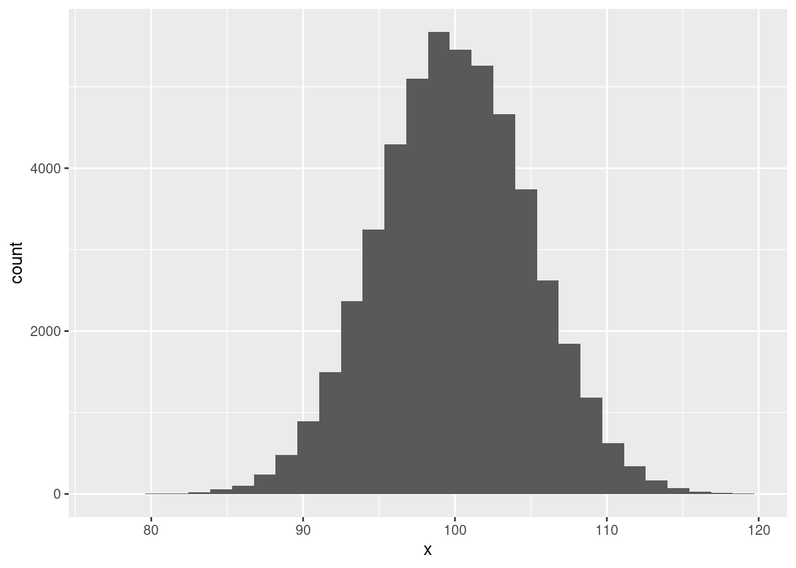
Neste histograma é possível entender que a maioria dos valores da
variável x no data.frame dist_normal estão próximos ao valor da
média, i.e., 100. Em ecologia, os histogramas são utilizados para
visualizar, por exemplo, a variação morfológica entre espécies
(subespécies, gênero, famílias, etc.), variação de parâmetros
populacionais entre diferentes espécies ou dentro da mesma espécies em
diferentes localidades.
6.5.1.1 4.1.1. Versão padrão
Vamos utilizar o conjunto de dados palmerpenguins para construir um
histograma da distribuição da variável flipper_length_mm com a
função geom_hitogram(). Esta função utiliza uma variável contínua no
eixo x e a frequência de cada categoria no eixo y. O gráfico a seguir
representa a frequência de uma variável (neste caso, a medida de todos
os pinguins, independente da espécie).
ggplot(data = penguins,
aes(x = flipper_length_mm)) +
geom_histogram()
6.5.1.2 4.1.2. Definindo o número de classes
Vamos utilizar o argumento bins para definir em quantas classes a
variável x deve ser dividida.
# histograma com 10 classes
ggplot(data = penguins,
aes(x = flipper_length_mm)) +
geom_histogram(bins = 10) +
labs(title = "10 classes")
# histograma com 30 classes
ggplot(data = penguins, aes(x = flipper_length_mm)) +
geom_histogram(bins = 30) +
labs(title = "30 classes") 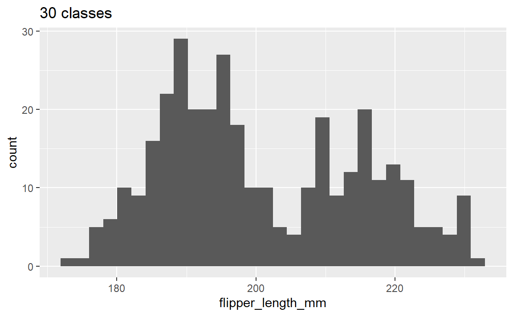
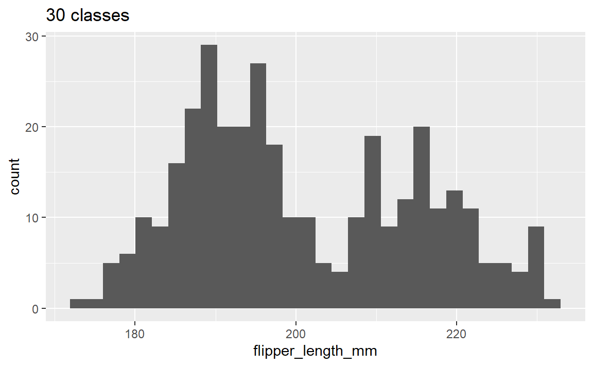
6.5.1.3 4.1.3. Comparando múltiplas categorias
Se quisermos comparar a distribuição de uma variável contínua entre
diferentes categorias, podemos utilizar o argumento fill para colorir
o gráfico. No exemplo abaixo, utilizamos cores diferentes para ilustrar
a distribuição da variável x entre espécies diferentes (fill = species).
# histograma com cores para diferentes categorias com sobreposicao
ggplot(data = penguins,
aes(x = flipper_length_mm, fill = species)) +
geom_histogram(alpha = .5) +
ggtitle("Com sobreposiçao")
# Histograma com cores para diferentes categorias sem sobreposição
ggplot(data = penguins, aes(x = flipper_length_mm, fill = species)) +
geom_histogram(position = "dodge") +
ggtitle("Sem sobreposiçao")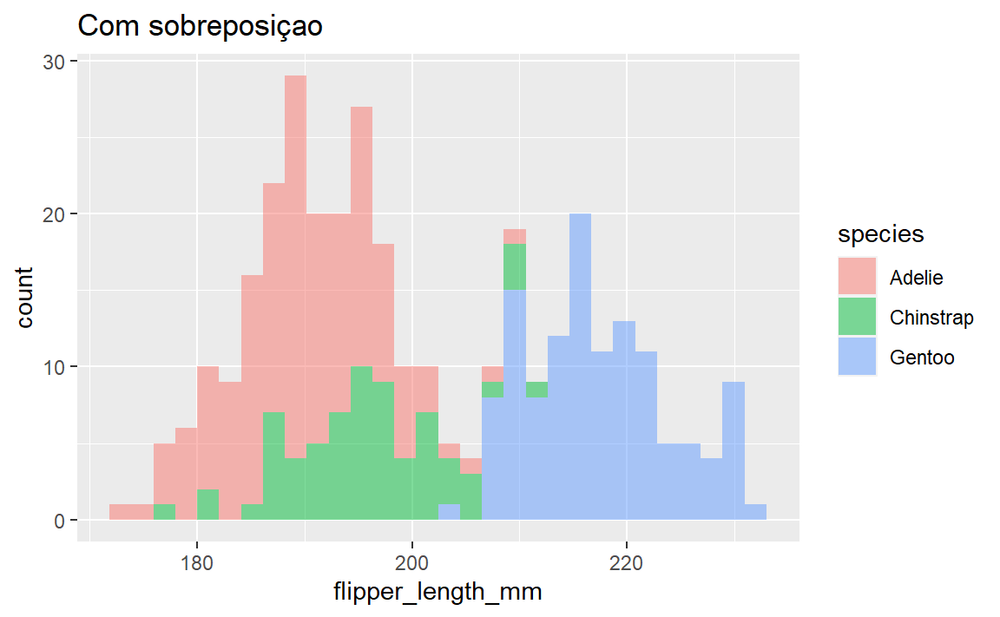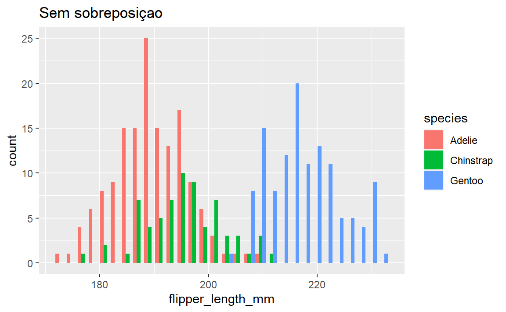
6.5.1.4 4.1.4. Ajustes finos (versão personalizada)
# Histogram example: flipper length by species
penguins %>%
ggplot(aes(x = flipper_length_mm, fill = species)) +
geom_histogram(alpha = .5, position = "identity") +
scale_fill_manual(values = c("darkorange", "darkorchid", "cyan4")) +
theme_bw(base_size = 16) +
labs(x = "Comprimento da nadadeira (mm)",
y = "Frequência (%)",
fill = "Espécies")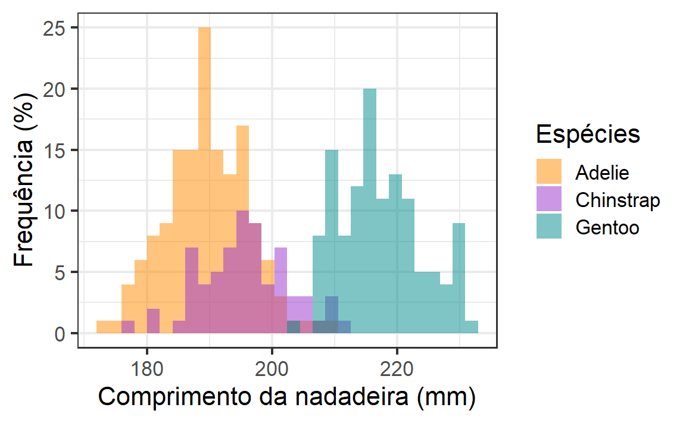
6.5.1.5 4.1.5. Principais camadas utilizadas na função geom_histogram()
aes():Eixo X: variável contínua (flipper_length_mm)
Preenchimento (fill): variável categórica (species) que define as cores tendo como base o número de níveis dentro desta categoria
geom():geom_histogram()Transparência dos pontos (
alpha): 0,5 (varia de 0, trasparência máxima, a 1, sem trasparência)Posição das barras: o argumento
positiondefine se as barras devem ser inseridas de maneira sobreposta (position = "identity") ou não (position = "dodge")
scale():scale_fill_manual()para definir manualmente as cores de preferência do usuáriotheme():theme_bw()para selecionar o tema com fundo branco elabs()para personalizar o títulos dos eixos X e Y.
6.5.2 4.2 Gráfico de densidade (density plot)
Nesta seção iremos aprender a criar um gráfico de densidade no R utilizando o ggplot2. Assim como o histograma, o gráfico de densidade é utilizado para visualizar a distribuição de uma variável contínua em intervalos. Esse gráfico é uma variação do Histograma (ver seção ??) que utiliza Kernel Smoother e, além de ser muito útil para visualizar distribuições, pode ser usado para testar várias hipóteses ecológicas, como descrito no Capítulo 14 (Diversidade Funcional).
6.5.2.1 4.2.1.Versão padrão
Vamos utilizar o conjunto de dados palmerpenguins, para plotar a
distribuição da variável flipper_length_mm em um Gráfico de
densidade. Utilizaremos a função geom_density() para plotar uma
variável no eixo x.
ggplot(data = penguins,
aes(x = flipper_length_mm)) +
geom_density()
Além da versão de densidade em linha, é possível utilizar o argumento
fill para definir a cor de preenchimento do gráfico e o argumento
alpha para definir a transparência do preenchimento. Utilizamos ainda
o argumento color para definir a cor da linha.
# Argumento fill
ggplot(data = penguins,
aes(x = flipper_length_mm)) +
geom_density(fill = "tomato")
# Argumento fill, color e alpha
ggplot(data = penguins,
aes(x = flipper_length_mm)) +
geom_density(fill = "steelblue",
color = "black",
alpha = .5)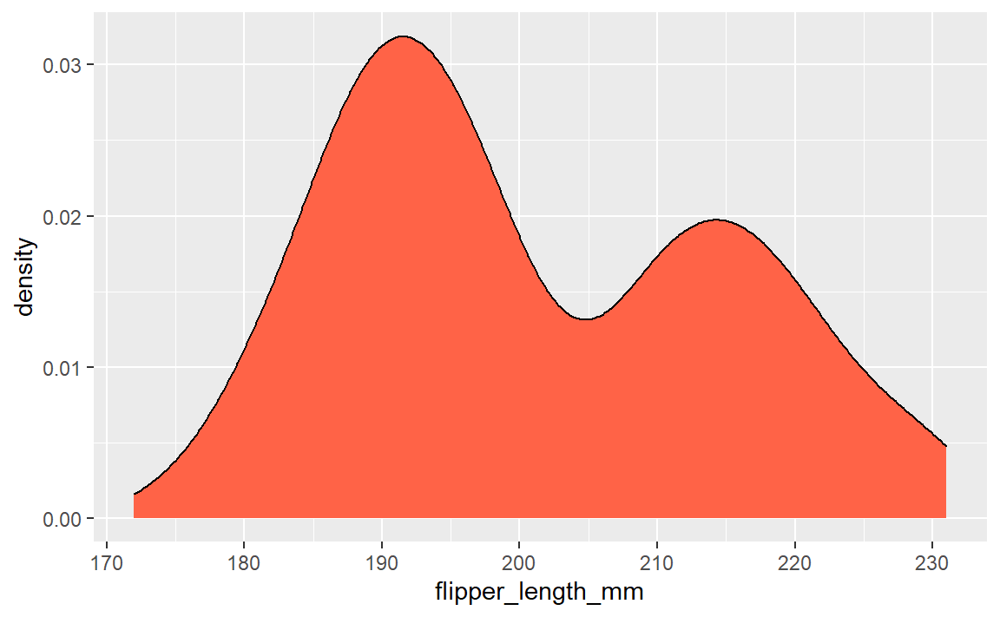
6.5.2.2 4.2.2. Comparando múltiplas categorias
Em algumas situações, queremos comparar a distribuição de uma variável
contínua entre diferentes categorias. Dessa forma, podemos utilizar o
argumento fill para colorir o gráfico. No exemplo abaixo, utilizamos
cores diferentes para ilustrar a distribuição da variável x entre
espécies diferentes (fill = species).
# O argumento fill preenche cada nível da coluna "species" (sem transparência: alpha = 1)
ggplot(data = penguins,
aes(x = flipper_length_mm, fill = species)) +
geom_density() +
labs(title = "Sem transparência")
# Gráfico de densidade com cores para diferentes categorias com sobreposicao
ggplot(data = penguins,
aes(x = flipper_length_mm, fill = species)) +
geom_density(alpha = .5) +
labs(title = "Com transparência")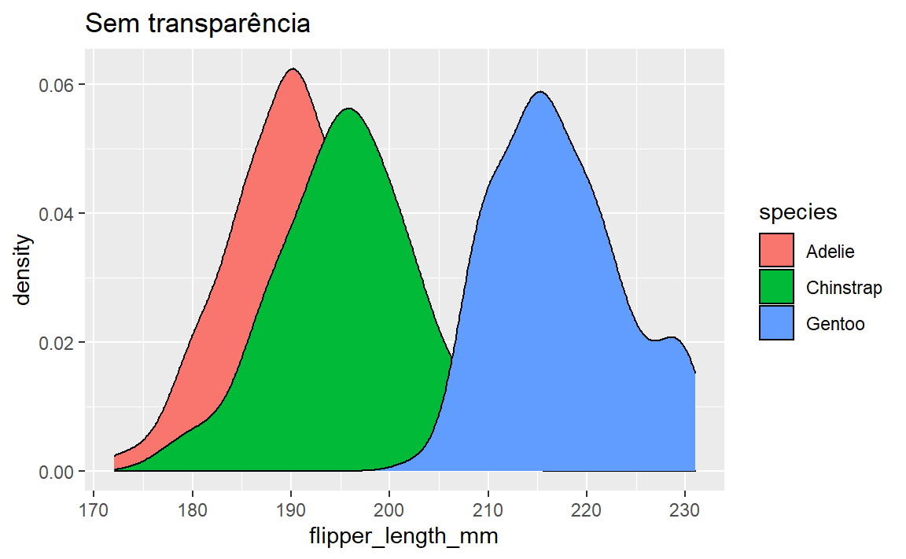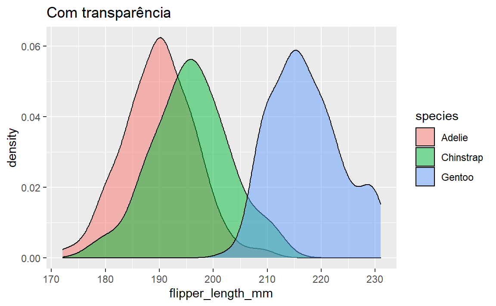
6.5.2.3 4.2.3. Ajustes finos (versão personalizada)
ggplot(data = penguins,
aes(x = flipper_length_mm, fill = species)) +
geom_density(alpha = .5) +
scale_fill_manual(values = c("darkorange", "darkorchid", "cyan4")) +
scale_x_continuous(breaks = seq(from = 160, to = 240, by = 10), limits = c(160, 240)) +
scale_y_continuous(breaks = seq(from = 0, to = .07, by = .01)) +
theme_bw(base_size = 16) +
labs(x = "Comprimento da nadadeira (mm)", y = "Frequência", fill = "Espécie")
6.5.2.4 4.2.4. Principais camadas utilizadas na função geom_density()
aes():Eixo X: variável contínua (flipper_length_mm)
Preenchimento (fill): variável categórica (species) que define as cores tendo como base o número de níveis dentro desta categoria
geom():geom_density()Transparência dos pontos (alpha): 0,5 (varia de 0, trasparência máxima, a 1, sem trasparência)
Posição das barras: o argumento
position()define se as barras devem ser inseridas de maneira sobreposta (position = "identity") ou não (position = "dodge")
scale():scale_fill_manual()para definir manualmente as cores de preferência do usuárioscale_x_continuous()escale_y_continuous()determinam os limites (valor mínimo e máximo) para os dois eixos e, além disso, os intervalos entre os valores (breaks)
theme():theme_bw()para selecionar o tema com fundo branco elabs()para personalizar o títulos dos eixos X e Y, e da legenda.
6.5.3 4.3. Diagrama de pontos (dot plot)
Uma alternativa ao gráfico de densidade e histograma é o diagrama de pontos (Dot plot), apesar de ser relativamente menos usado em ecologia.
6.5.3.1 4.3.1. Versão padrão
Vamos utilizar o conjunto de dados palmerpenguins para visualizar a
distribuição da variável flipper_length_mm com o diagrama de pontos com
a função geom_dotplot().
ggplot(data = penguins,
aes(x = flipper_length_mm)) +
geom_dotplot()
6.5.3.2 4.3.2. Comparando múltiplas categorias
Assim como nas funções geom_histogram() e geom_density(), é possível
comparar categorias na função geom_dotplot() utilizando o argumento
fill, bem como os argumentos color, alpha e dotsize.
ggplot(data = penguins,
aes(x = flipper_length_mm, fill = species)) +
geom_dotplot(dotsize=1)
ggplot(data = penguins,
aes(x = flipper_length_mm, fill = species)) +
geom_dotplot(dotsize=0.7,
color = "black",
alpha = 0.5)

6.5.3.3 4.3.3. Ajustes finos (versão personalizada)
ggplot(data = penguins,
aes(x = flipper_length_mm, fill = species)) +
geom_dotplot(color = "black",
alpha = .7) +
theme_bw(base_size = 16) +
scale_fill_manual(values = c("darkorange", "darkorchid", "cyan4")) +
scale_x_continuous(breaks = seq(from = 170, to = 240, by = 10), limits = c(170, 240)) +
scale_y_continuous(breaks = seq(from = 0, to = 1.4, by = .2), limits = c(0, 1.4)) +
labs(x = "Comprimento da nadadeira (mm)", y = "Frequência", fill = "Espécies")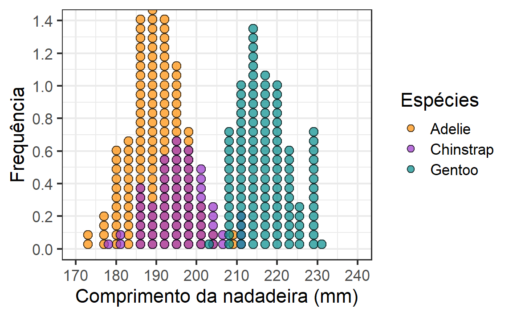
Uma das limitações do dotplot é que a sobreposição dos pontos não permite a visualização apropriada desses valores sobrepostos entre diferentes grupos comparados.
6.5.3.4 4.3.4. Principais camadas utilizadas na função geom_dotplot()
aes():Eixo X: variável contínua (flipper_length_mm)
Preenchimento (fill): variável categórica (species) que define as cores tendo como base o número de níveis dentro desta categoria
geom():geom_dotplot()Transparência dos pontos (
alpha): 0,5 (varia de 0, trasparência máxima, a 1, sem trasparência)Cor da linha do ponto (
color): valor padrão (se não for especificado) é blackTamanho dos pontos (
dotsize): valor padrão (se não for especificado) é 1Posição dos pontos: o argumento
positiondefine se as barras devem ser inseridas de maneira sobreposta (position = "identity") ou não (position = "dodge")
scale():scale_fill_manual()para definir manualmente as cores de preferência do usuárioscale_x_continuous()escale_y_continuous()determinam os limites (valor mínimo e máximo) para os dois eixos e, além disso, os intervalos entre os valores (breaks)
theme():theme_bw()para selecionar o tema com fundo branco elabs()para personalizar o títulos dos eixos X e Y, e da legenda.
6.5.4 4.4. Gráfico de barras (bar plot)
O gráfico de barras é um dos mais usados em artigos e livros da ecologia, uma vez que permite comparar valores absolutos ou médios (combinados com alguma medida de variação como desvio padrão) de uma variável continua entre diferentes níveis de uma variável categórica.
6.5.4.1 4.4.1. Versão padrão
O gráfico de barras utiliza retângulos para representar uma variável contínua ou a contagem de uma variável categórica, sendo que o comprimeno dos retângulos é proporcional ao valor que ele representa. Por exemplo, é possível comparar qual a quantidade de indivíduos medidos para cada espécie de pinguim.
# Número de indivíduos coletados
penguins_count <- penguins %>%
dplyr::count(species)
# grafico de barras
ggplot(data = penguins_count,
aes(x = species, y = n)) +
geom_bar(stat = "identity")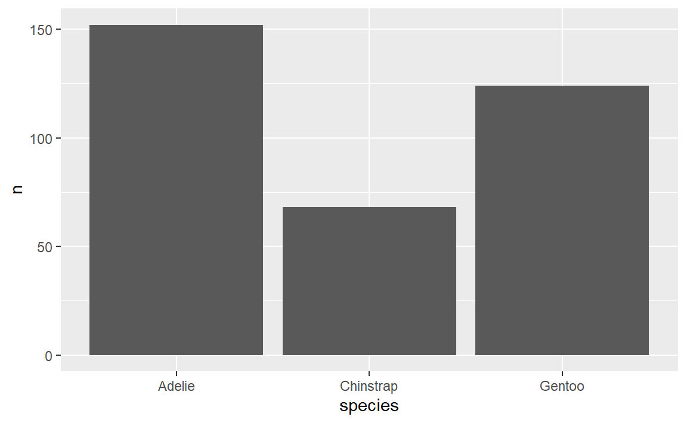
Além disso, é possível alterar as cores (color) e preenchimento
(fill) das barras, bem como sua transparência (alpha) e largura
(width), como demonstrado nos próximos quatro gráficos.1
# modificando preenchimento
ggplot(data = penguins_count,
aes(x = species, y = n)) +
geom_bar(stat = "identity",
fill = "steelblue")
# Modificando cor e preenchimento
ggplot(data = penguins_count,
aes(x = species, y = n)) +
geom_bar(stat = "identity",
color = "steelblue",
fill = "white") 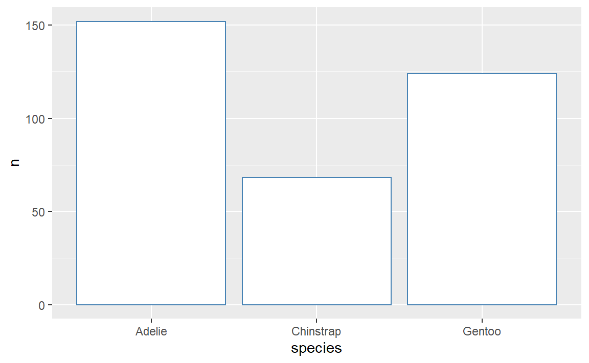
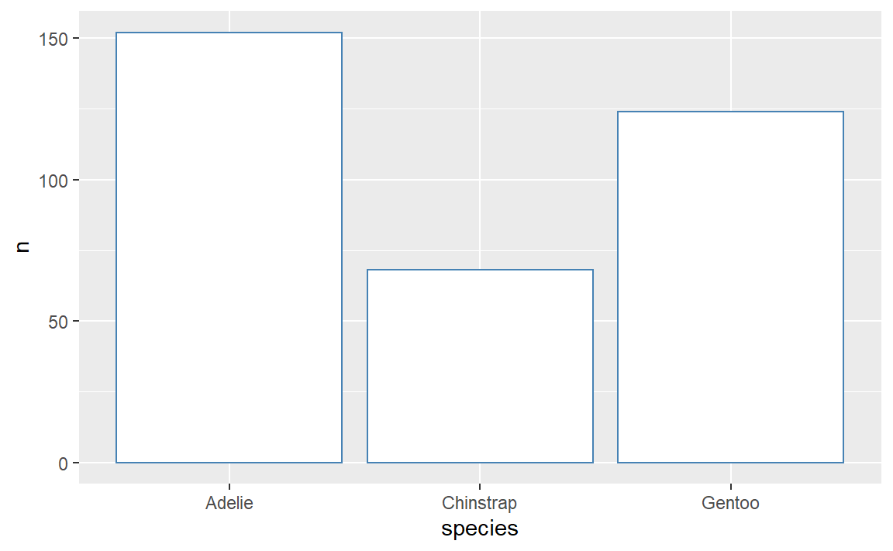
# Modificando a largura da barra = 0.75
ggplot(data = penguins_count,
aes(x = species, y = n)) +
geom_bar(stat = "identity",
width = 0.75) +
labs(title = "largura = 0.75")
# Modificando a largura da barra = 0.25
ggplot(data = penguins_count,
aes(x = species, y = n)) +
geom_bar(stat = "identity",
width = 0.25) +
labs(title = "largura = 0.25") 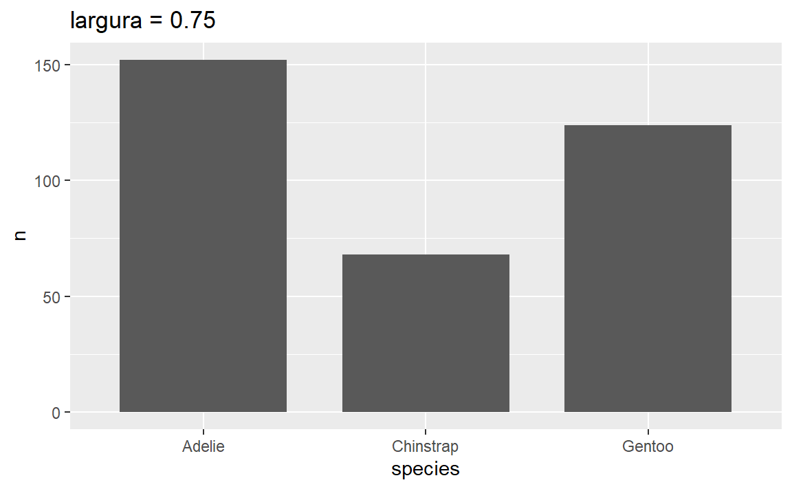
Outra possibilidade para representação do gráfico de barras é inverter a
direção das barras com a função coord_flip().
# Barras vertical
ggplot(data = penguins_count,
aes(x = species, y = n)) +
geom_bar(stat = "identity",
width = 0.6)
# Barras horizontal
ggplot(data = penguins_count,
aes(x = species, y = n)) +
geom_bar(stat = "identity",
width = 0.6) +
coord_flip() 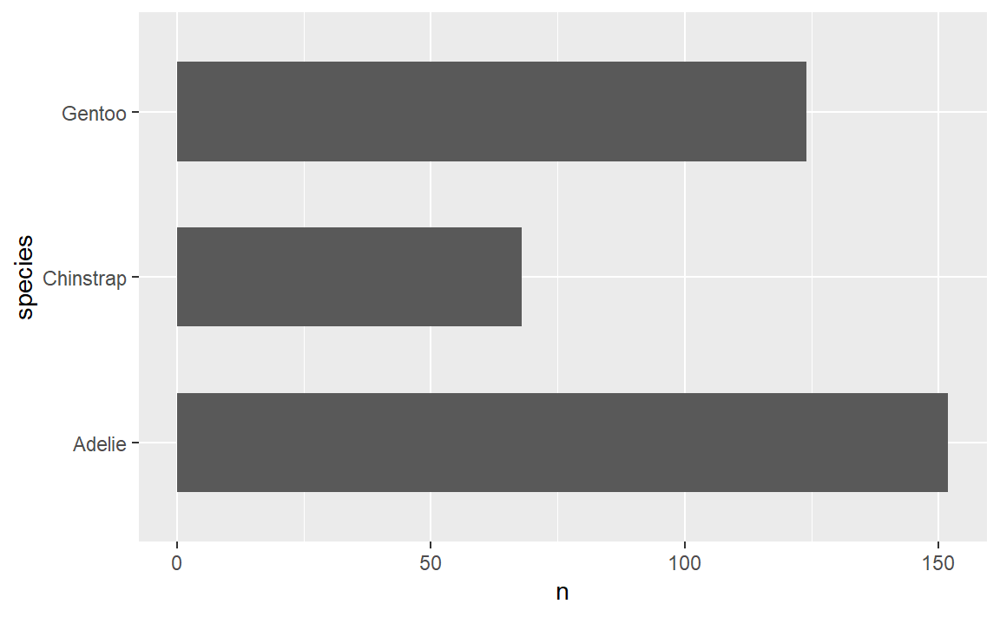
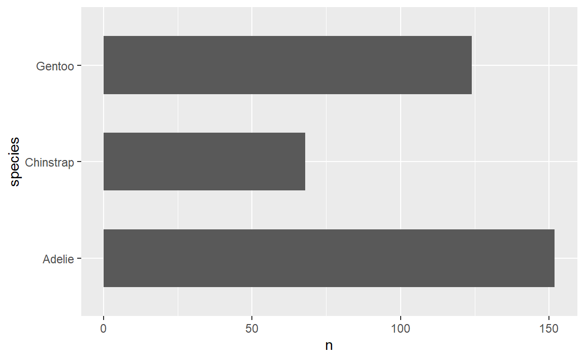
É possível utilizar variáveis categóricas para definir cores e
preenchimento e ilustrar, por exemplo, tratamentos ou espécies
diferentes com os argumentos fill e color.
# grafico de barras com preenchimento colorido
ggplot(data = penguins_count,
aes(x = species, y = n, fill = species)) +
geom_bar(stat = "identity")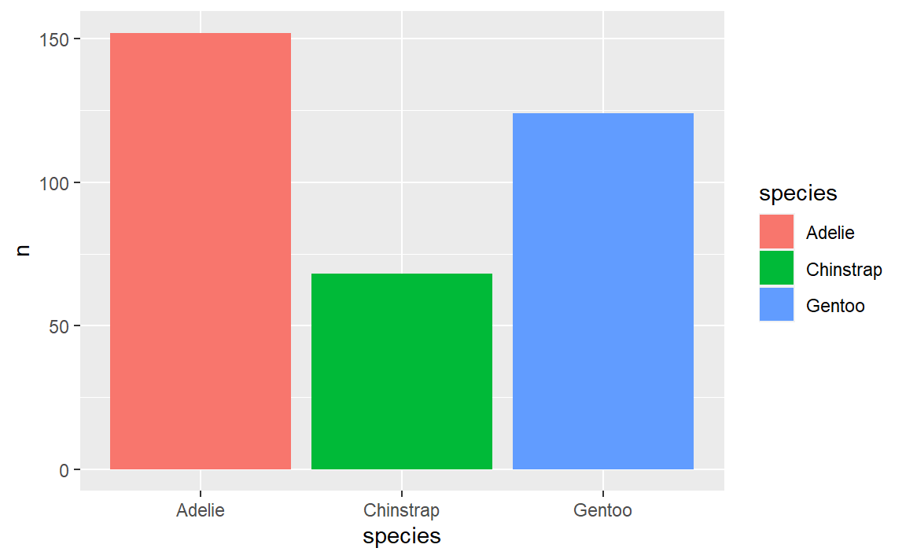
6.5.4.2 4.4.2. Adicionando medidas de variação
Em algumas comparações, utilizar somente os valores absolutos pode não
ser a visualização mais apropriadas como, por exemplo, em desenho de
ANOVA (Capítulo 7). Desse modo, ao invés do valor máximo da barra
representar o valor absoluto (e.g., número de indivíduos de uma
espécies), ele vai representar o valor médio. Além disso, linhas
adicionais (chamadas barras de erro) vão representar alguma medida de
variação como desvio padrão, erro padrão, intervalo de confiança, entre
outros. A função Rmisc::summarySE() permite realizar esses cálculos de
maneira simples, como demonstrado no exemplo abaixo.
# Calculando média e desvio padrão por grupo
penguins2 <- penguins %>%
drop_na(flipper_length_mm) # remover valores ausentes na variável (NAs)
penguins_mean <- summarySE(penguins2,
measurevar = "flipper_length_mm",
groupvars = "species")
head(penguins_mean)
#> species N flipper_length_mm sd se ci
#> 1 Adelie 151 189.9536 6.539457 0.5321735 1.051524
#> 2 Chinstrap 68 195.8235 7.131894 0.8648692 1.726286
#> 3 Gentoo 123 217.1870 6.484976 0.5847306 1.157533
# Gráfico de barras com desvio padrão
ggplot(data = penguins_mean,
aes(x = species,
y = flipper_length_mm,
fill = species)) +
geom_bar(stat = "identity", alpha = 0.4) +
geom_errorbar(aes(ymin = flipper_length_mm - sd,
ymax = flipper_length_mm + sd),
width = 0.1) +
geom_point() +
labs(title = "Barra de erro com desvio padrão")
# Gráfico de barras com intervalo de confiânça
ggplot(data = penguins_mean,
aes(x = species,
y = flipper_length_mm,
fill = species)) +
geom_bar(stat = "identity", alpha = 0.4) +
geom_errorbar(aes(ymin = flipper_length_mm - se,
ymax = flipper_length_mm + se),
width = 0.1) +
geom_point() +
labs(title = "Barra de erro com erro padrão")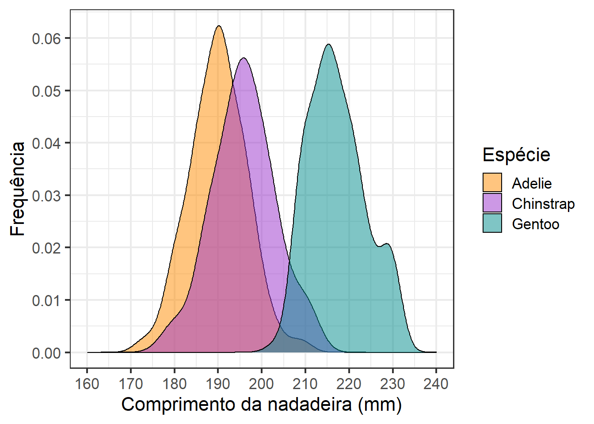
6.5.4.3 4.4.3. Ajustes finos (versão personalizada)
ggplot(data = penguins_count,
aes(x = species, y = n, fill = species)) +
geom_bar(stat = "identity") +
geom_label(aes(label = n),
fill = "white") +
theme_bw(base_size = 16) +
scale_fill_manual(values = c("darkorange", "purple", "cyan4")) +
labs(x = "Espécie", y = "Número de indivíduos", fill = "Espécie")6.5.5 4.5. Gráfico de setores (pie chart e donut chart)
Além do gráfico de barras, o gráfico de setores representa uma alternativa para comparar a proporção entre categorias. Tais gráficos podem ser representados como pie charts ou donut charts, como demonstrado abaixo. No exemplo abaixo, utilizamos a mesma comparação realizada no item 4.3.3 acima. Porém, os valores de contagem (número de indivíduos por espécie) devem ser transformados previamente em proporção.
6.5.5.1 4.5.1. Gráfico de setores (pie chart)
# Cálculo da proporção
penguins_prop <- penguins %>%
dplyr::count(species) %>%
dplyr::mutate(prop = round(n/sum(n), 4)*100)
# Pie chart
ggplot(data = penguins_prop, aes(x = "", y = prop, fill = species)) +
geom_bar(stat = "identity", color = "white") +
coord_polar("y", start = 0) +
geom_text(aes(label = paste0(prop, "%")), color = "white",
position = position_stack(vjust = 0.5), size = 8) +
scale_fill_manual(values = c("darkorange", "purple", "cyan4")) +
theme_void() +
labs(fill = "Espécie")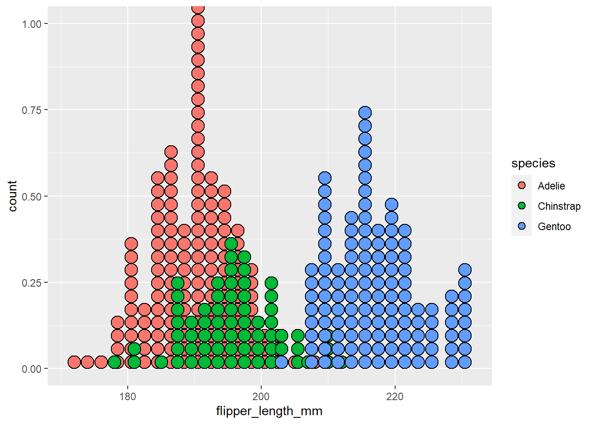
6.5.5.2 4.5.2. Gráfico de setores (donut chart)
ggplot(data = penguins_prop, aes(x = 2, y = prop, fill = species)) +
geom_bar(stat = "identity") +
coord_polar(theta = "y", start = 0) +
geom_text(aes(label = paste0(prop, "%")), color = "white",
position = position_stack(vjust = .5), size = 5) +
scale_fill_manual(values = c("darkorange", "purple", "cyan4")) +
xlim(0, 2.5) +
theme_void() +
theme(legend.position = c(.5, .5),
legend.title = element_text(size = 20),
legend.text = element_text(size = 15)) +
labs(fill = "Espécie")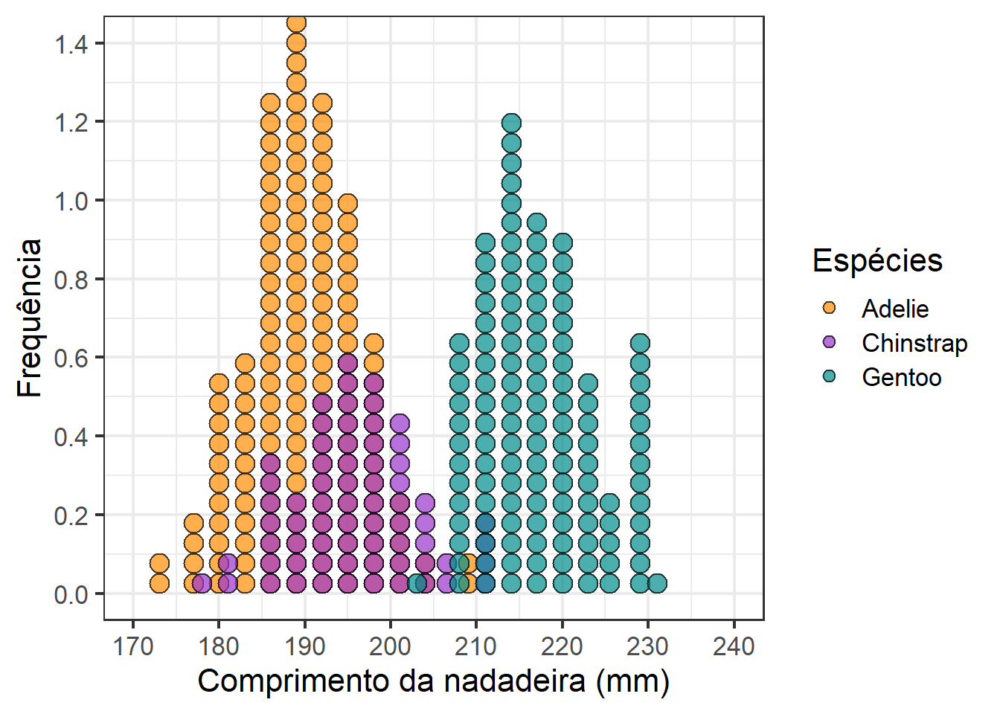
6.5.5.3 4.5.3. Comparando gráficos de setores com gráfico de barras
O mesmo conjunto de dados pode ser visualizado de diferentes formas. Não
diferente, a comparação da proporção de ocorrências de diferentes
categorias pode ser feita de várias maneiras. Abaixo, fizemos a
comparação da proporção de indivíduos por cada uma das três espécies dos
dados penguins.
ggplot(data = penguins_prop, aes(x = "", y = prop, fill = species)) +
geom_bar(stat = "identity", color = "white") +
coord_polar("y", start = 0) +
geom_text(aes(label = paste0(prop, "%")), color = "white",
position = position_stack(vjust = 0.5), size = 3) +
scale_fill_manual(values = c("darkorange", "purple", "cyan4")) +
theme_void() +
labs(title = "Pie chart", fill = "Espécies") -> g_pie
ggplot(data = penguins_prop, aes(x = 2, y = prop, fill = species)) +
geom_bar(stat = "identity") +
coord_polar(theta = "y", start = 0) +
geom_text(aes(label = paste0(prop, "%")), color = "white",
position = position_stack(vjust = .5), size =3) +
scale_fill_manual(values = c("darkorange", "purple", "cyan4")) +
xlim(0, 2.5) +
theme_void() +
theme(legend.position = "none") +
labs(title = "Donut chart", fill = "Espécies") -> g_donut
ggplot(data = penguins_prop,
aes(x = species, y = prop, fill = species)) +
geom_bar(stat = "identity") +
geom_label(aes(label = prop),
fill = "white") +
theme_bw() +
scale_fill_manual(values = c("darkorange", "purple", "cyan4")) +
labs(title = "Gráfico de Barras (Horizonal)", x = "Espécies", y = "Número de indivíduos", fill = "Espécies")+
theme(legend.position = "none")-> g_bar_h
ggplot(data = penguins_prop,
aes(x = species, y = prop, fill = species)) +
geom_bar(stat = "identity") +
geom_label(aes(label = prop),
fill = "white") +
theme_bw() +
coord_flip()+
scale_fill_manual(values = c("darkorange", "purple", "cyan4")) +
labs(title = "Gráfico de Barras (Vertical)", x = "Espécies", y = "Número de indivíduos", fill = "Espécies") +
theme(legend.position = "none")-> g_bar_v
grid.arrange(g_pie, g_donut, g_bar_h, g_bar_v, nrow=2)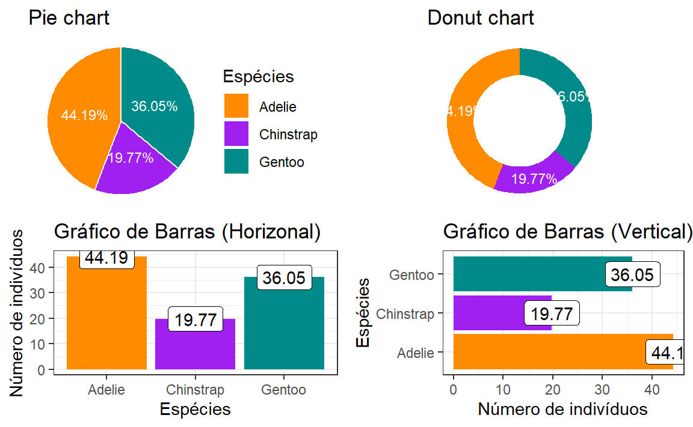
6.5.5.4 4.5.4. Principais camadas utilizadas no gráfico de barras e de setores: geom_bar()
aes():Eixo X: variável categórica (species)
Eixo Y: variável contínua (flipper_length_mm)
Preenchimento (fill): a variável categórica (species) define a cor do preenchimento e os níveis dentro desta categoria determinam o número de cores que devem ser indicadas no
scale_fill_manual().
geom():geom_bar()Transparência das barras (
alpha): 0,4 (varia de 0, trasparência máxima, a 1, sem trasparência)stat: é necessário usar o argumento “identity” quando os valores do eixo Y são adicionados pelo usuário
geom_label()- forma geométrica que adiciona rótulo dos valores absolutos das barras por categoria (species)
geom_errorbar()ymineymaxdelimitam os valores mínimos e máximos, respectivamente, das barras de erro. Tais valores são representados pelo valor da média menos (no caso do ymin) ou mais (no caso do ymax) o valor do intervalo de confiança, desvio ou erro padrão.
coord_polar(): sistema de coordenadas para gerar barras circulares sobrepostas (stacked) que são usadas nos gráficos de setores (pie chart e donut chart)- o argumento
start = 0indica o local de início do gráfico que, neste caso, começa na “hora” 0 em um “relógio” de 12 horas.
- o argumento
scale():scale_fill_manual()para definir manualmente as cores de preferência do usuário
theme():theme_bw()para selecionar o tema com fundo branco elabs()para personalizar o títulos dos eixos X e Y, e da legenda.
6.5.6 4.6. Gráfico de caixa (boxplot)
O boxplot, conhecido amplamente nos artigos e livros de ecologia, é uma visualização gráfica que sintetiza informações importantes de dados contínuos como mediana e variação (quartil 1-3, ver Figura 2).

Figura 6.2: Estrutura e elementos do boxplot
6.5.6.1 4.6.1. Versão padrão
Vamos plotar uma variável contínua (flipper_length_mm) no eixo y em
função de uma variável categórica no eixo x (species). A definição de
qual coluna do banco de dados é a x e qual é a y é feita dentro do
comendo aes().
ggplot(penguins, aes(y = flipper_length_mm, x = species)) +
geom_boxplot()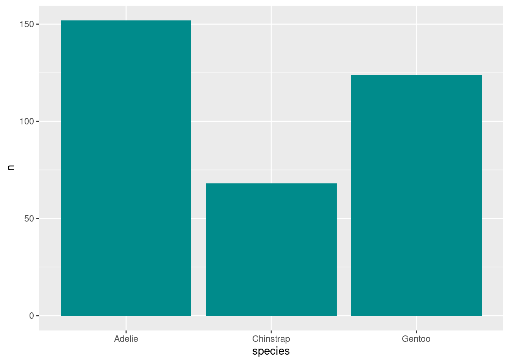
É possível destacar os pontos referentes aos outliers (se houver) com o argumento outlier.color. Caso tenha interesse, é possível também remover os outliers do gráfico.
ggplot(penguins, aes(y = flipper_length_mm, x = species)) +
geom_boxplot(outlier.color = "red")+
labs(title = "outliers vermelhos")
ggplot(penguins, aes(y = flipper_length_mm, x = species)) +
geom_boxplot(outlier.shape = NA)+
labs(title = "outliers removidos")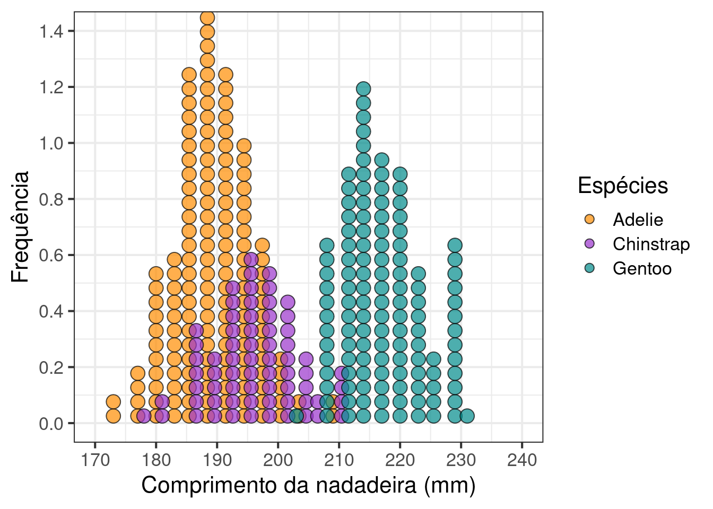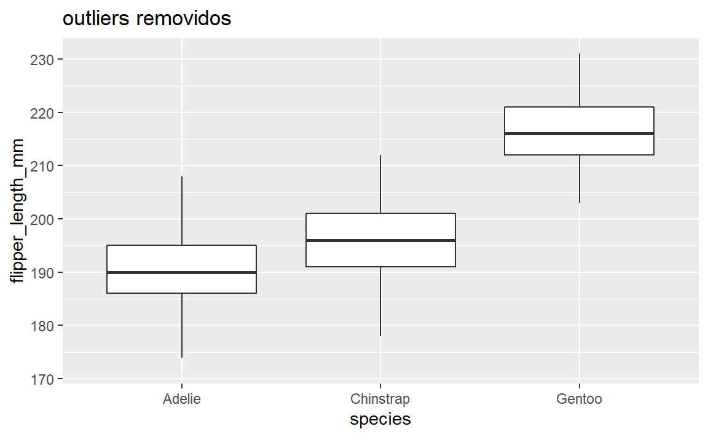
Outra alternativa para os gráficos do tipo boxplot é utilizar o argumento notch = TRUE para produzir diagramas de caixa entalhados (notched). Estes diagramas são úteis para inferir de forma aproximada se exite diferença significativa entre as medias dos grupos.
ggplot(penguins, aes(y = flipper_length_mm, x = species)) +
geom_boxplot(notch = TRUE)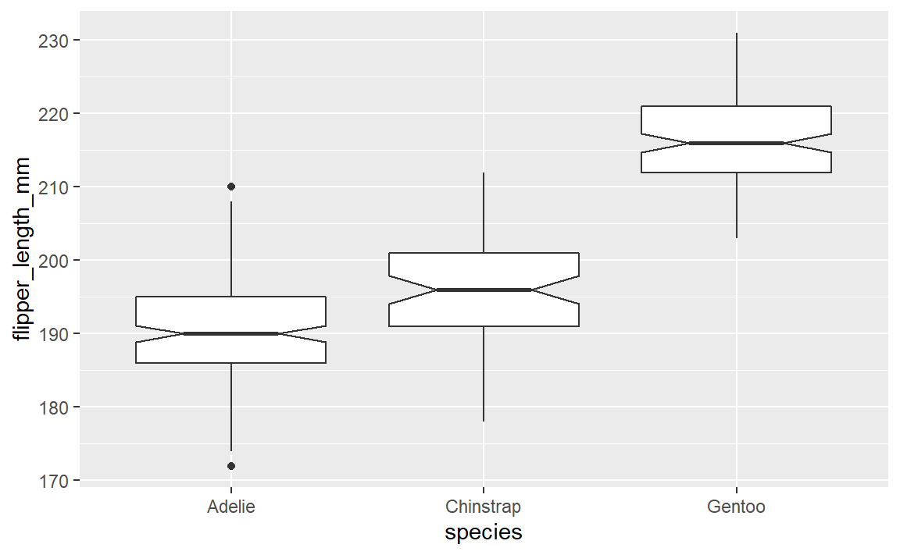
6.5.6.2 4.6.2. Comparando múltiplas categorias
No exemplo abaixo, utilizamos cores diferentes para ilustrar espécies diferentes através do argumento fill = species.
ggplot(penguins,
aes(y = flipper_length_mm, x = species, fill = species)) +
geom_boxplot()6.5.6.3 4.6.3. Combinando boxplot com pontos (jitter)
Podemos ainda acrescentar pontos para mostrar a distribuição dos dados.
# boxplot com jitters
ggplot(penguins,
aes(y = flipper_length_mm, x = species, fill = species)) +
geom_boxplot() +
geom_jitter(size = .6, width = .2)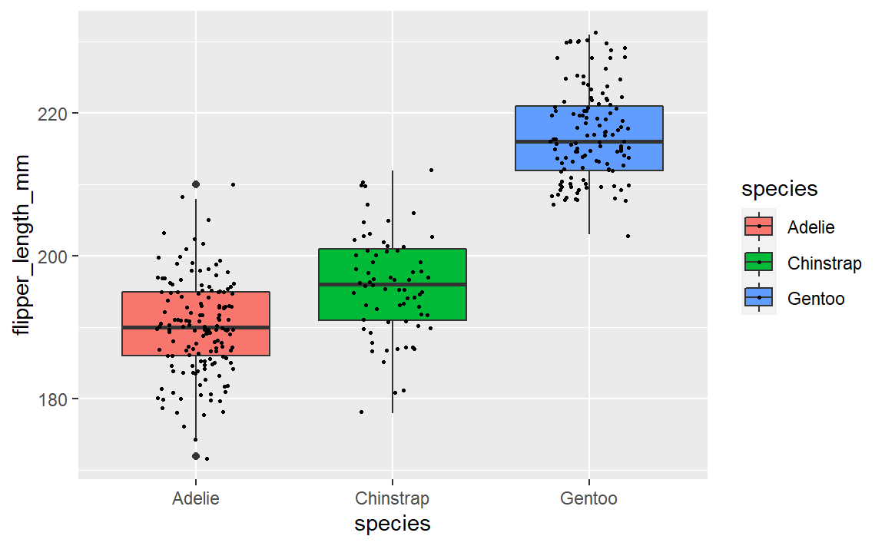
6.5.6.4 4.6.4. Gráfico de violino (violin plot) como alternativa ao boxplot
Além das caixas, podemos utilizar o formato de “violino” para
representar a variação de dados contínuos entre categorias. A informação
adicional ao boxplot que o gráfico de violino permite visualizar é a
densidade dos pontos, assim como apresentamos acima no gráfico de
densidades geom_density(). A diferença é que a densidade é espelhada
e, desse modo, podemos visualizar os intervalores dos dados com maior ou
menor concentração de valores.
# violino com jitters
ggplot(penguins, aes(y = flipper_length_mm, x = species, fill = species)) +
geom_violin() +
geom_jitter(size = .6, width = .2)É possível também combinar boxplot e gráfico de violino em um único gráfico.
# violino com boxplot
ggplot(penguins, aes(y = flipper_length_mm, x = species, fill = species)) +
geom_violin() +
geom_boxplot(width = 0.1, fill = "grey")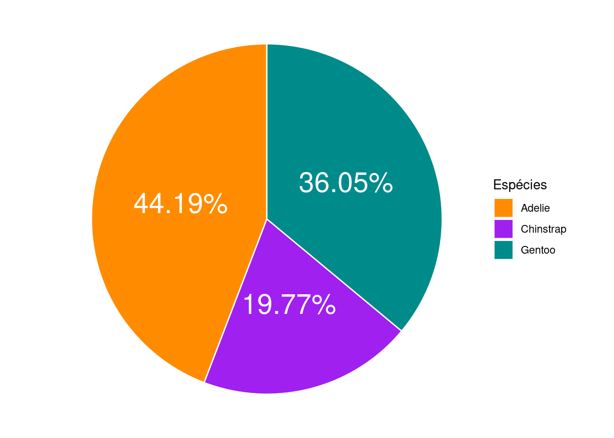
6.5.6.5 4.6.5. Ajustes finos (versão personalizada)
### geom_boxplot()
ggplot(data = penguins,
aes(x = species, y = flipper_length_mm, fill = species)) +
geom_boxplot(width = .3,
show.legend = FALSE) +
geom_jitter(alpha = .5,
show.legend = FALSE,
position = position_jitter(width = .1, seed = 0)) +
scale_fill_manual(values = c("darkorange", "purple", "cyan4")) +
theme_bw(base_size = 16) +
labs(x = "Species", y = "Flipper length (mm)")
# geom_violin()
ggplot(data = penguins,
aes(x = species, y = flipper_length_mm, fill = species)) +
geom_violin(width = .3,
show.legend = FALSE) +
geom_point(alpha = .5,
show.legend = FALSE) +
scale_fill_manual(values = c("darkorange", "purple", "cyan4")) +
theme_bw(base_size = 16) +
labs(title = "Pontos sem jitter", x = "Species", y = "Flipper length (mm)")
# geom_violin()
ggplot(data = penguins,
aes(x = species, y = flipper_length_mm, fill = species)) +
geom_violin(width = .3,
show.legend = FALSE) +
geom_jitter(alpha = .5,
show.legend = FALSE,
position = position_jitter(width = .1, seed = 0)) +
scale_fill_manual(values = c("darkorange", "purple", "cyan4")) +
theme_bw(base_size = 16) +
labs(title = "Pontos com jitter",, x = "Species", y = "Flipper length (mm)")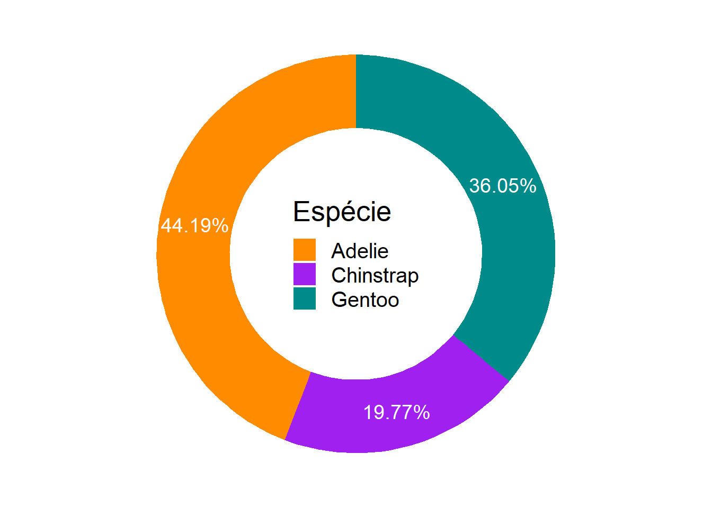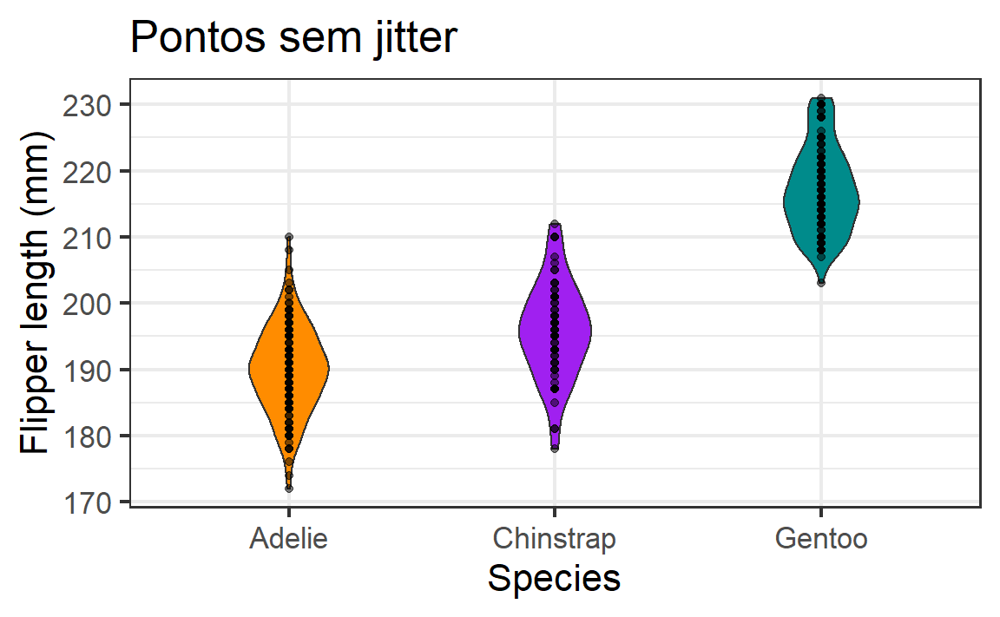
6.5.6.6 4.6.6. Principais camadas utilizadas no geom_boxplot()e geom_violin()
aes():Eixo X: variável categórica (species)
Eixo Y: variável contínua (flipper_length_mm)
Preenchimento (fill): a variável categórica (species) define a cor do preenchimento e os níveis dentro desta categoria determinam o número de cores que devem ser indicadas no
scale_fill_manual().
geom():geom_boxplot()width: largura das barras (valor padrão: width = 1)fill: pode definir uma cor padrão (caso não tenha utilizado o fill dentro do argumentoaes()) comofill = "grey"notch: a escolha padrão da funçãogeom_boxplot()énotch = FALSE; para utilizar a caixa entalhada o argumento deve sernotch = TRUE
geom_violin()- assim como nas outras formas geométricas, é possível controlar largura, cor, preenchimento e transparências dos violinos
geom_jitter()- esta função basicamente “agita” aleatóriamente os pontos
para evitar a sobreposição de valores idênticos. Esta função
produz a mesma representação se usar a função
geom_point(position = "jitter")
- esta função basicamente “agita” aleatóriamente os pontos
para evitar a sobreposição de valores idênticos. Esta função
produz a mesma representação se usar a função
scale():scale_fill_manual()para definir manualmente as cores de preferência do usuário
theme():theme_bw()para selecionar o tema com fundo branco elabs()para personalizar o títulos dos eixos X e Y, e da legenda.
6.6 4.7. Gráfico de dispersão (scatter plot)
O gráfico de dispersão (em ingl~es, scatterplot) é famoso na ecologia por ser a visualização preferida para prepresentar a relação entre área e riqueza de espécies. Neste gráfico, os eixos X e Y são representados por variáveis contínuas. Em especial, os gráficos de dispersão são usados para representar os resultados testados por análises estatísticas como regressão linear, ancova, mantel, PCA, PCoA, entre outros (Capítulos 7-14, ).
6.6.1 4.7.1. Versão padrão
ggplot(penguins,
aes(x = bill_length_mm, y = bill_depth_mm)) +
geom_point()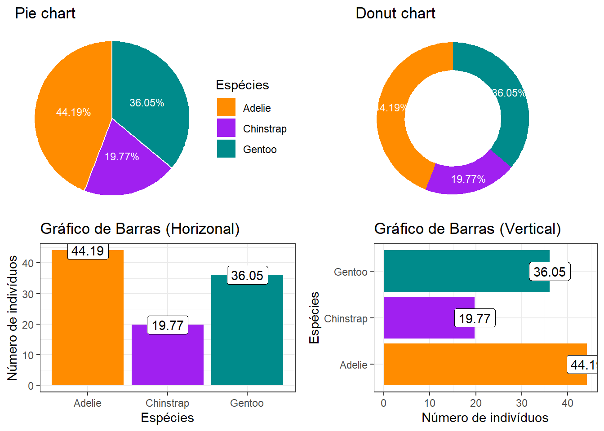
6.6.2 4.7.2. Definindo a cor, tamanho, forma e preenchimento dos pontos
# Cor e tamanho dos pontos
ggplot(penguins,
aes(x = bill_length_mm, y = bill_depth_mm)) +
geom_point(color = "royalblue",
size = 3)+
labs(title = "Sem transparência")
# Cor e tamanho dos pontos
ggplot(penguins,
aes(x = bill_length_mm, y = bill_depth_mm)) +
geom_point(color = "red",
size = 4,
alpha = 0.5)+
labs(title = "Com transparência")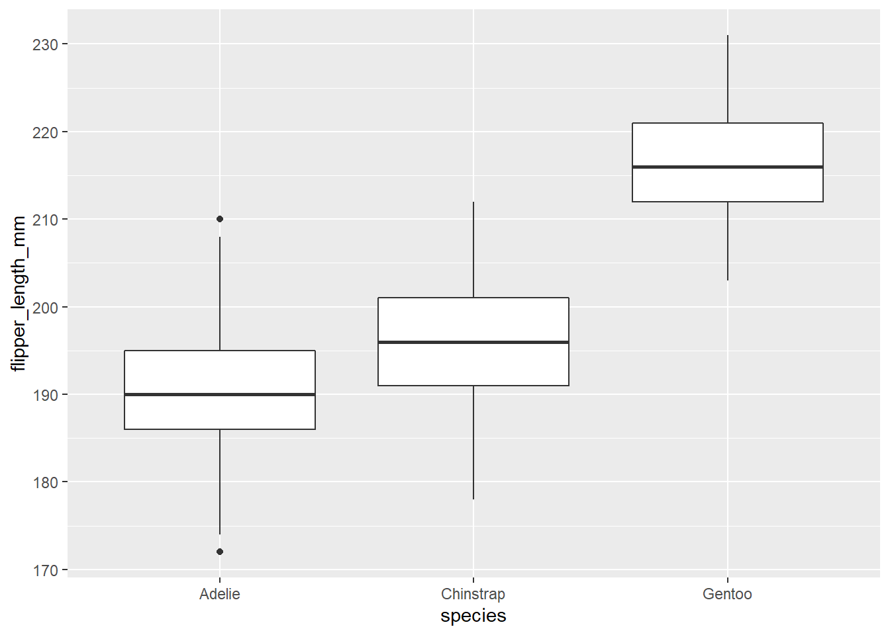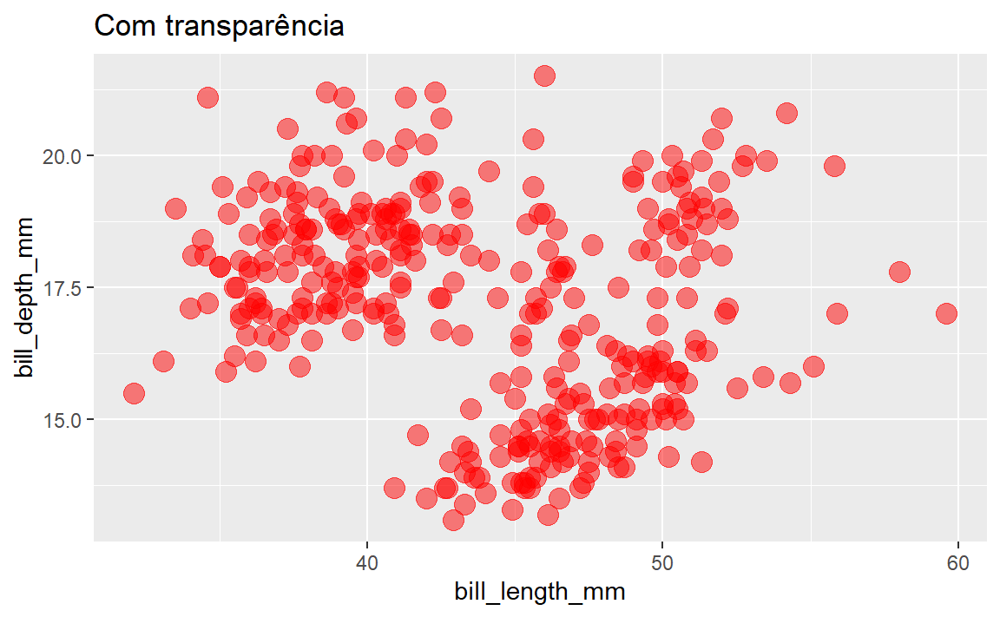
A forma dos pontos permite dois controles importantes: a forma em si
(símbolos como círculo, quadrado, etc.) e a possibilidade de
preenchimento da forma. A figura a seguir discrimina esses símbolos e o
valor que deve ser utilizado para desenhar a forma preferida. É
importante notar que os símbolos 21 a 25 possuem dois argumentos: (i)
cor (que, na verdade, é a cor da linha do símbolo) e (ii) fill (cor que
define o preenchimento do símbolo). O tipo de símbolo é definido pelo
argumento shape.

Figura 6.3: Figura 3. Tipos de símbolos disponíveis.
Assim, é possível controlar cores, formas e preenchimento combinado os
argumentos shape, fille colorcom a função scale_manual(). É
importante notar que para os símbolos entre 15 e 20 só podemos controlar
o argumento cor, enquanto os símbolos entre 21 e 25 podemos controlar a
cor e o preenchimento.
# shape = 1 e size = 2
ggplot(penguins, aes(x = bill_length_mm, y = bill_depth_mm)) +
geom_point(shape = 1, size = 2)
# shape = 19 (símbolo padrão da função) e size = 3
ggplot(penguins,
aes(x = bill_length_mm, y = bill_depth_mm, color = species)) +
geom_point(shape = 19, size = 3)
# shape = 21 e size = 4
ggplot(penguins,
aes(x = bill_length_mm, y = bill_depth_mm, fill = species)) +
geom_point(shape = 21, size = 4, color = "black") 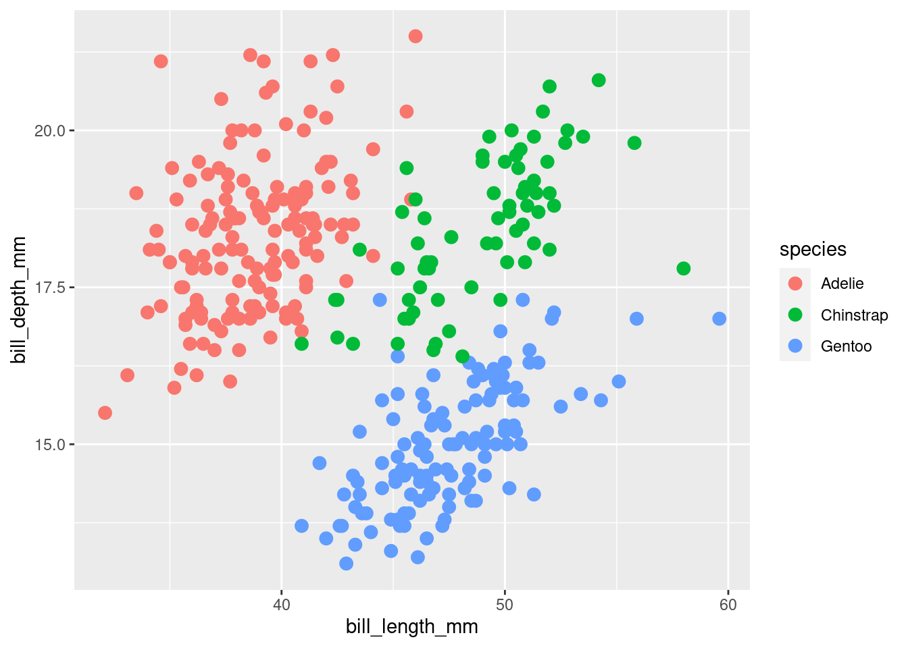
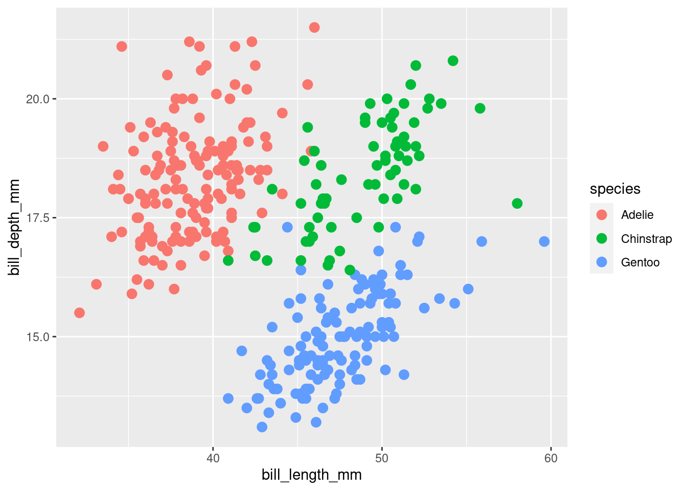
6.6.3 4.7.3. Definindo linhas de ajuste
Quando usamos modelos estatísticos como, por exemplo, lm(), glm(),
gam(), entre outros, podemos utilizar os valores preditos para
demonstrar a relação entre as variáveis X e Y. No ggplot2 a função
geom_smooth() faz esse ajuste com certa simplicidade. Além disso,
incluir a cor da espécie dentro do aes() essa informação é herdada
para as próximas camadas. Neste caso, uma regressão linear é plotada
para o subconjunto de dados que representa cada espécie.
# shape = 21 e size = 4
ggplot(penguins,
aes(x = bill_length_mm, y = bill_depth_mm, color = species)) +
geom_point(size = 4, alpha = .5)+
geom_smooth(method= lm)
6.6.4 4.7.4. Ajustes finos (versão personalizada)
ggplot(data = penguins,
aes(x = bill_length_mm,
y = bill_depth_mm,
color = species,
shape = species)) +
geom_point(size = 3,
alpha = 0.8) +
geom_smooth(method = "lm", se = FALSE) +
scale_shape_manual(values = c(19, 15, 17))+
scale_color_manual(values = c("darkorange", "purple", "cyan4")) +
theme_bw(base_size = 16) +
labs(x = "Comprimento do bico (mm)", y = "Profundidade do bico (mm)",
color = "Espécies", shape = "Espécies")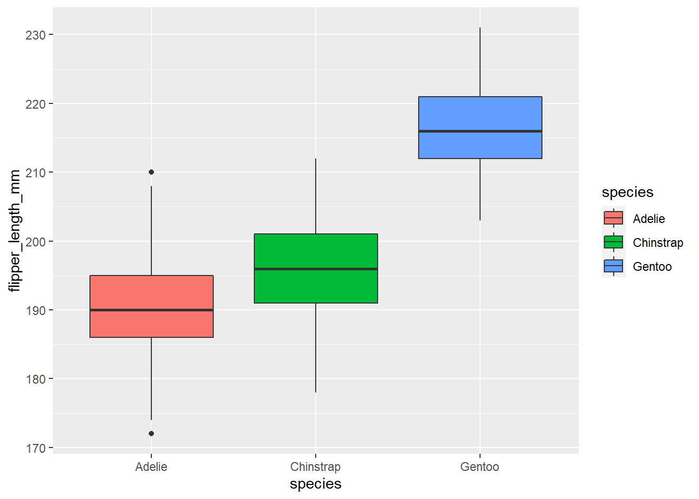
Além disso, podemos relacionar dados não tão usuais. Recomendamos a leitura do artigo de Matejka & Fitzmaurice (2017) que apresenta as armadilhas típicas que dados podem gerar quando evitamos de visualizá-los previmamente.
# data + plot
datasaurus_dozen %>%
dplyr::filter(dataset == "dino") %>%
ggplot() +
aes(x = x, y = y) +
geom_point(colour = "black", fill = "black",
size = 5, alpha = .75, pch = 21) +
theme_bw() +
theme(axis.title = element_text(size = 24),
axis.text.x = element_text(size = 20),
axis.text.y = element_text(size = 20))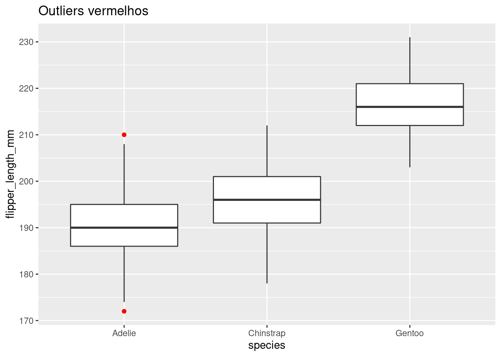
6.7 4.8. Visualização de múltiplos gráficos pareados
Muitas vezes precisamos compreender a correlação entre múltiplas variáveis, sendo comuum que essas variáveis sejam de mais de um tipo (contínua, categórica, etc). A solução mais indicada para termos uma visão geral do conjunto de dados e de suas interrelações é o gráfico generalizado pareado (Emerson et al. 2013).
6.7.1 4.8.1. Gráfico pareado com variáveis contínuas
A função ggpairs()do pacote GGally permite criar múltiplos gráficos
pareados comparando as variáveis contínuas no seu conjunto de dados.
Além de plotar gráficos de dispersão de cada par de variáveis, ela
apresenta gráficos de densidade de cada variável individualmente e, além
disso, os valores de correlação entre os pares analisados com ou sem uma
potencial variável categórica (neste caso, species)
penguins %>%
dplyr::select(body_mass_g, ends_with("_mm")) %>%
GGally::ggpairs(aes(color = penguins$species)) +
scale_colour_manual(values = c("darkorange", "purple", "cyan4")) +
scale_fill_manual(values = c("darkorange", "purple", "cyan4")) +
theme_bw()
6.7.2 4.8.2. Gráfico pareado com vários tipos de variáveis
Como alternativa, a função ggpairs() permite também incluir
variáveis categóricas nas comparações. Neste caso, ela reconhece o tipo
de gráfico (boxplot, dispersão, etc…) a partir da classe das
variáveis.
penguins %>%
dplyr::select(species, sex, body_mass_g, ends_with("_mm")) %>%
GGally::ggpairs(aes(color = species)) +
scale_colour_manual(values = c("darkorange", "purple", "cyan4")) +
scale_fill_manual(values = c("darkorange", "purple", "cyan4")) +
theme_bw()
6.8 5. Erros comuns dos usuários do ggplot2 e como evitá-los
Abaixo, apresentamos uma lista não exaustiva dos erros mais comuns que cometemos (e vimos muitos usuários cometerem) ao fazer gráficos no ggplot2:
Utilizar ajuste manual nas funções
scale_shape_manual(),scale_color_manual()ouscale_fill_manual()sem indicar no argumentoaes()as variáveis que devem definir cada um desses elementos gráficos.Definir a cor ou preenchimento de um geom dentro do
aes()global (ggplot(aes(color = "black¨)) quando no fundo essa definição deveria ser dento do geom (geom_point(color = "black").Utilizar ajuste manual na função
scale_size_manual()indicando uma variável categórica ao invés de numérica.Número de cores indicadas como valores no
scale_fill_manual()ouscale_color_manual(): ao definir as cores de maneira personalizada (ou seja, não usando o padrão da função) é muito comum utilizarmos o número de cores usados por algum tutorial ou livro. Com frequência, o exemplo seguido e seus dados não possuem o mesmo número de cores. Deste modo, você pode usar comando no R para ajudar a quantificar o número de cores necessárias. Por exemplo, para os dados penguins, o comando a seguir indica o número de cores necessárias:length(levels(penguins$species)). Assim, será necessário indicar três cores diferentes dentro da funçãoscale_().Função
geom_smooth(): como falado acima, a funçãogeom_smooth()é muito útil (e simples) para gerar as linhas de ajuste (best fit) típicas de modelos lineares e não lineares. Porém, fique alerta que ao usar, por exemplo,geom_smooth(method = lm), o modelo linear utilizado para testar sua predição foi olm(). Se tiver utilizadoglm()ougam()o ajuste deve ser produzido a partir desses modelos.Uso incorreto da classe das variáveis: neste caso, o usuário utilizar uma variável numérica (por exemplo, 1, 2 e 3) como variável categórica. Neste caso, é preciso transformar a variável numérica em variável categóricas (antes de fazer o ggplot2 ou dentro do
aes()). Veja exemplos abaixo:
penguins %>%
ggplot(aes(x = year, y = bill_length_mm))+
geom_boxplot() +
theme_bw()+
labs(title = "Figura incorreta")
penguins %>%
ggplot(aes(x = factor(year), y = bill_length_mm))+
geom_boxplot() +
theme_bw()+
labs(title = "Figura correta com transformação interna")
penguins %>%
mutate(year_f = as.factor(year)) %>%
ggplot(aes(x = year_f, y = bill_length_mm))+
geom_boxplot() +
theme_bw()+
labs(title = "Figura correta com transformação prévia")


6.9 6. Finalização de gráficos para publicação
6.9.1 6.1. Posição, cores e fonte da legenda
É possível controlar a posição, cores e fonte da legenda em diversos
locais com alguns argumentos dentro da função theme():
legend.positioncontrola a posição na área do gráfico:top,right,bottom,leftounone. Além disso, é possível inserir a legenda internamente no gráfico indicando as posições nos eixos X e Ylegend.boxdetermina as caracteríscas do retângulo onde a legenda é inserida:legend.box.background(combinado comelement_rect()) elegend.box.margin(combinado commargin())legend.textcontrola a cor e tamanho da legenda (as duas informações devem ser inseridas dentro da funçãoelement_text())legend.titlepersonaliza a cor e tamanho da legenda também dentro da funçãoelement_text()
ggplot(data = penguins,
aes(x = bill_length_mm,
y = bill_depth_mm,
color = species,
shape = species)) +
geom_point(size = 3,
alpha = 0.8) +
geom_smooth(method = "lm", se = FALSE) +
scale_shape_manual(values = c(19, 15, 17))+
scale_color_manual(values = c("darkorange", "purple", "cyan4")) +
theme_bw(base_size = 16) +
labs(title = "Legenda acima do gráfico", x = "Comprimento do bico (mm)", y = "Profundidade do bico (mm)",
color = "Espécies", shape = "Espécies") +
theme(legend.position = "top")
ggplot(data = penguins,
aes(x = bill_length_mm,
y = bill_depth_mm,
color = species,
shape = species)) +
geom_point(size = 3,
alpha = 0.8) +
geom_smooth(method = "lm", se = FALSE) +
scale_shape_manual(values = c(19, 15, 17))+
scale_color_manual(values = c("darkorange", "purple", "cyan4")) +
theme_bw(base_size = 16) +
labs(title = "Legenda abaixo do gráfico", x = "Comprimento do bico (mm)", y = "Profundidade do bico (mm)",
color = "Espécies", shape = "Espécies")+
theme(legend.position = "bottom")
ggplot(data = penguins,
aes(x = bill_length_mm,
y = bill_depth_mm,
color = species,
shape = species)) +
geom_point(size = 3,
alpha = 0.8) +
geom_smooth(method = "lm", se = FALSE) +
scale_shape_manual(values = c(19, 15, 17))+
scale_color_manual(values = c("darkorange", "purple", "cyan4")) +
theme_bw(base_size = 16) +
labs(title = "Sem legenda", x = "Comprimento do bico (mm)", y = "Profundidade do bico (mm)",
color = "Espécies", shape = "Espécies")+
theme(legend.position = "none")
ggplot(data = penguins,
aes(x = bill_length_mm,
y = bill_depth_mm,
color = species,
shape = species)) +
geom_point(size = 3,
alpha = 0.8) +
geom_smooth(method = "lm", se = FALSE) +
scale_shape_manual(values = c(19, 15, 17))+
scale_color_manual(values = c("darkorange", "purple", "cyan4")) +
theme_bw(base_size = 16) +
labs(title = "Legenda personalizada", x = "Comprimento do bico (mm)", y = "Profundidade do bico (mm)",
color = "Espécies", shape = "Espécies")+
theme(legend.position = "right",
legend.text = element_text(size = 14, colour = "red"),
legend.title = element_text(face = "bold"),
legend.box.background = element_rect(color="red", size=2),
legend.margin = margin(6, 6, 6, 6))
ggplot(data = penguins,
aes(x = bill_length_mm,
y = bill_depth_mm,
color = species,
shape = species)) +
geom_point(size = 3,
alpha = 0.8) +
geom_smooth(method = "lm", se = FALSE) +
scale_shape_manual(values = c(19, 15, 17))+
scale_color_manual(values = c("darkorange", "purple", "cyan4")) +
theme_bw(base_size = 16) +
labs(title = "Legenda interna", x = "Comprimento do bico (mm)", y = "Profundidade do bico (mm)",
color = "Espécies", shape = "Espécies")+
theme(legend.position = c(0.1, 0.1),
legend.title = element_blank(),
legend.key = element_blank(),
legend.background = element_blank(),
legend.text = element_text(size = 12, face = "bold"))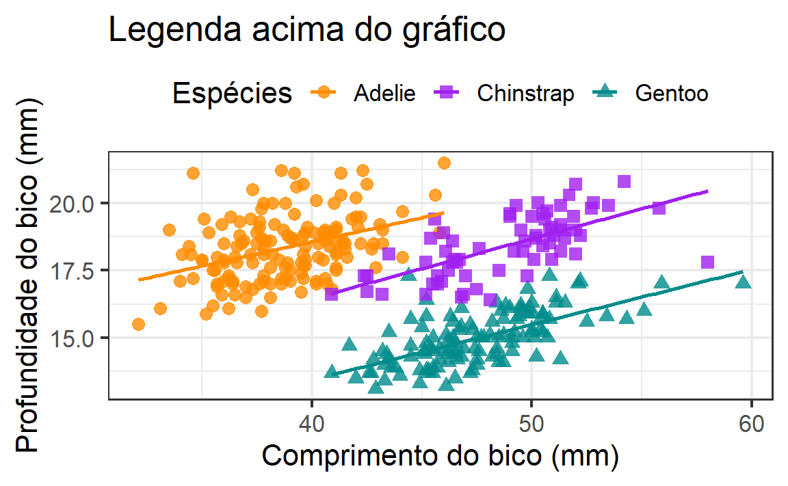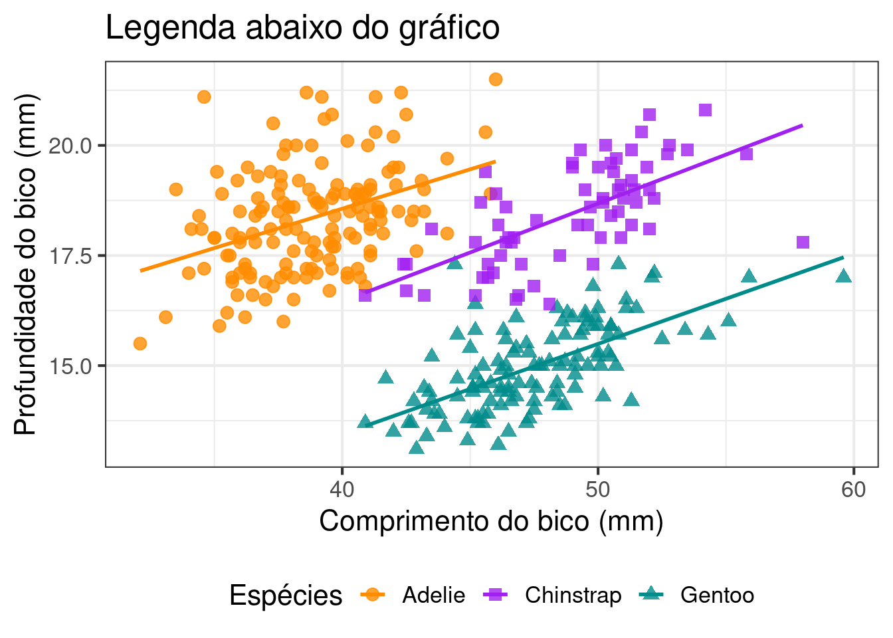 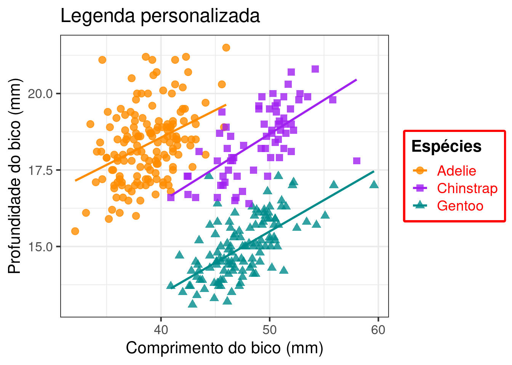
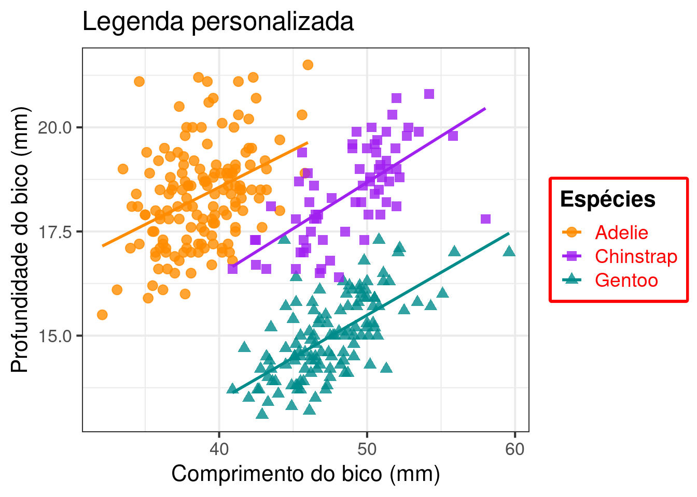
6.9.2 6.2. Elementos gráficos: eixo, fonte, grid
O gráfico padronizado (sem edição extra) geralmente não traz elementos mínimos para publicação em revistas, livros e periódicos. Além do controle da posição, cor e tamanho da legenda, é fundamental personalizar os seguintes elementos: eixo, fonte e grid.
Eixos
Variação: define limites mínimos e máximos para os eixos X (
xlim()) e Y (ylim())Intervalo: define o valor intervalo entre os números dos eixos X e Y
Escala
ggplot(data = penguins,
aes(x = bill_length_mm,
y = bill_depth_mm,
color = species,
shape = species)) +
geom_point(size = 4, alpha = 0.5) +
ylim(0, 22) +
xlim(0, 60) +
labs(x = "Eixo X", y = "Eixo Y")
ggplot(data = penguins,
aes(x = bill_length_mm,
y = bill_depth_mm,
color = species,
shape = species)) +
geom_point(size = 4, alpha = 0.5) +
scale_x_continuous(limits = c(20, 60), breaks = seq(20, 60, 2))+
labs(x = "Eixo X", y = "Eixo Y")
ggplot(data = penguins,
aes(x = bill_length_mm,
y = bill_depth_mm,
color = species,
shape = species)) +
geom_point(size = 4, alpha = 0.5) +
scale_x_continuous(limits = c(20, 60), breaks = seq(20, 60, 10))+
labs(x = "Eixo X", y = "Eixo Y")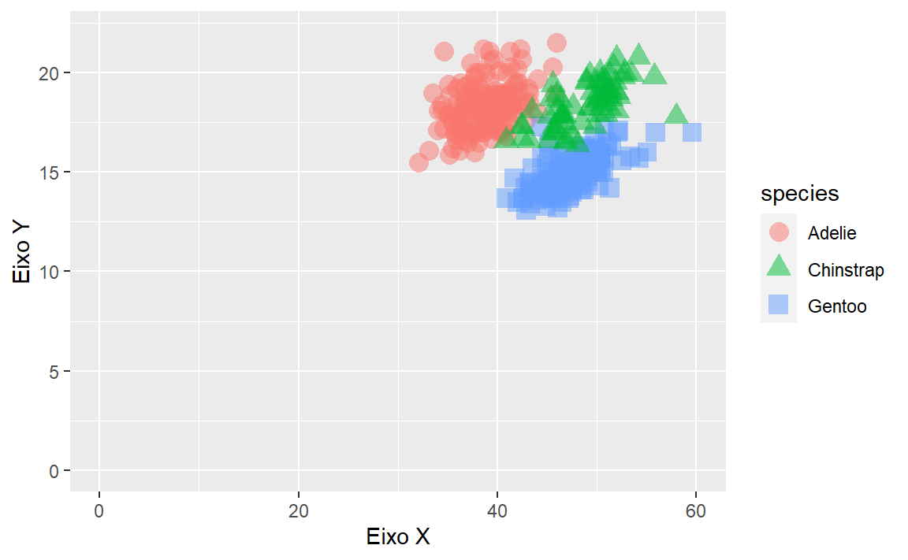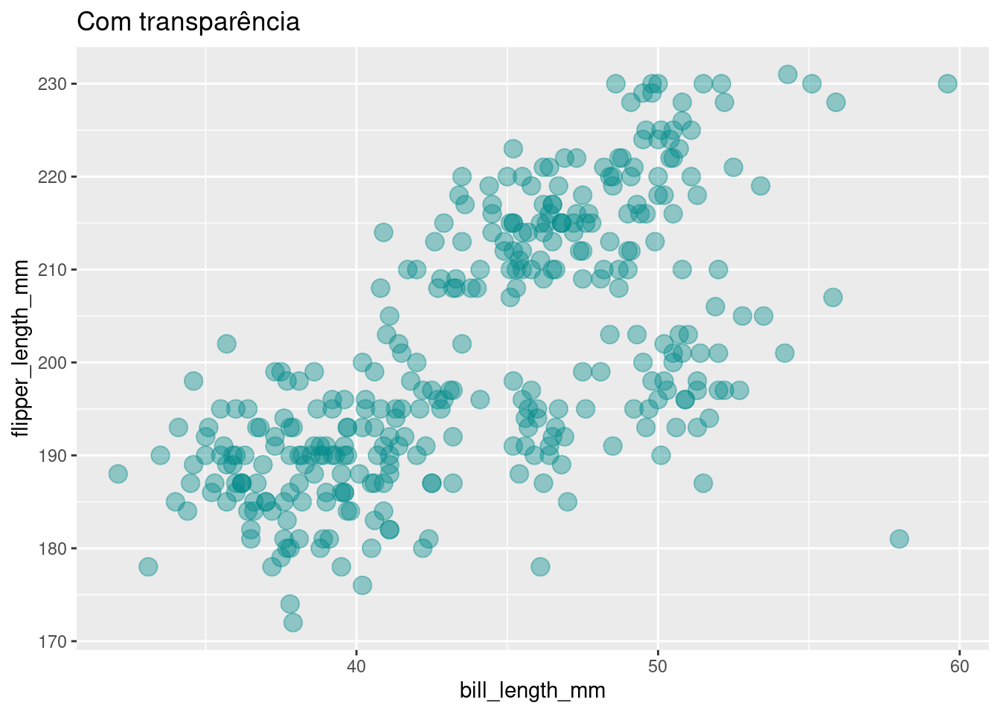
Fonte dos eixos X e Y
Tipo
Tamanho
Cor
Face (itálico, negrito, etc.)
Ângulo
ggplot(data = penguins,
aes(x = bill_length_mm,
y = bill_depth_mm,
color = species,
shape = species)) +
geom_point(size = 4, alpha = 0.5) +
theme(axis.title.x = element_text(face = "bold", size = 20, colour = "royalblue"),
axis.text.x = element_text(size = 14),
axis.title.y = element_text(face = "bold", size = 20, colour = "royalblue"),
axis.text.y = element_text(size = 14))+
labs(x = "Eixo X", y = "Eixo Y")
ggplot(data = penguins,
aes(x = bill_length_mm,
y = bill_depth_mm,
color = species,
shape = species)) +
geom_point(size = 4, alpha = 0.5) +
scale_x_continuous(limits = c(20, 60), breaks = seq(20, 60, 2))+
theme(axis.title.x = element_text(face = "bold", size = 20, colour = "royalblue"),
axis.text.x = element_text(size = 14, angle = 45),
axis.title.y = element_text(face = "bold", size = 20, colour = "royalblue"),
axis.text.y = element_text(size = 14))+
labs(x = "Eixo X", y = "Eixo Y")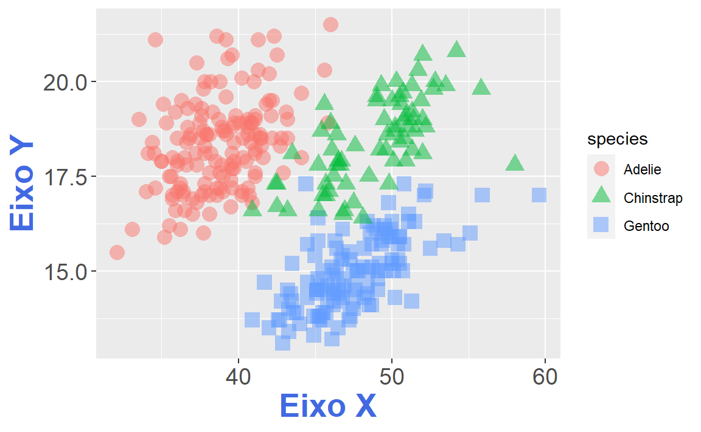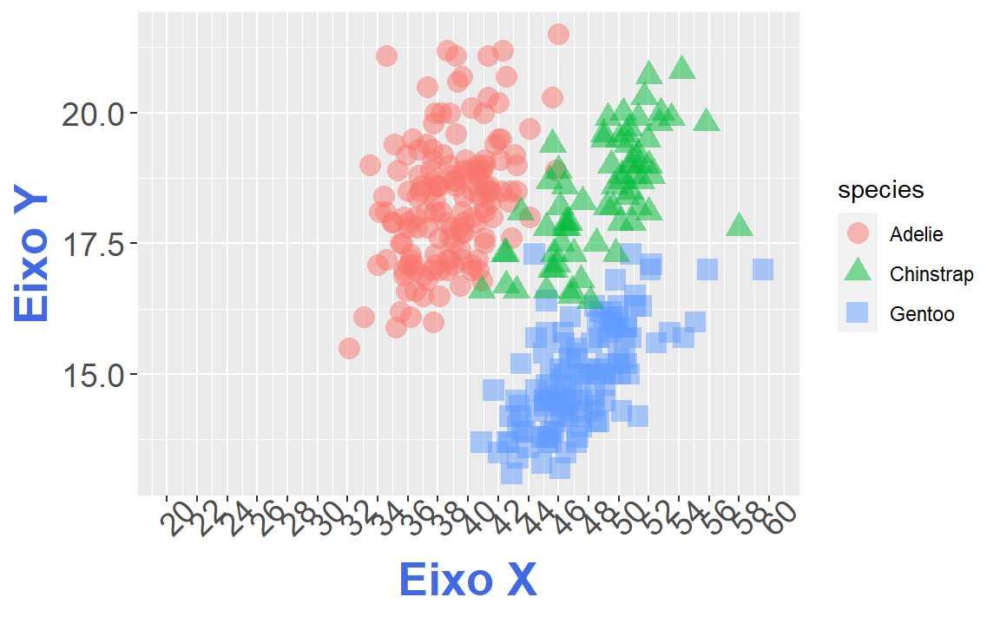
Grid
Linhas de grade principais (
panel.grid.major)Linhas de grade secundárias (
panel.grid.minor)Borda do gráfico (
panel.border)
ggplot(data = penguins,
aes(x = bill_length_mm,
y = bill_depth_mm,
color = species,
shape = species)) +
geom_point(size = 4, alpha = 0.5) +
scale_x_continuous(limits = c(30, 60), breaks = seq(30, 60, 5))+
theme(axis.title.x = element_text(face = "bold", size = 16),
axis.text.x = element_text(size = 12),
axis.title.y = element_text(face = "bold", size = 16),
axis.text.y = element_text(size = 12),
panel.grid.minor = element_blank())+
labs(title="Linhas de grade principais", x = "Eixo X", y = "Eixo Y")
ggplot(data = penguins,
aes(x = bill_length_mm,
y = bill_depth_mm,
color = species,
shape = species)) +
geom_point(size = 4, alpha = 0.5) +
scale_x_continuous(limits = c(30, 60), breaks = seq(30, 60, 5))+
theme(axis.title.x = element_text(face = "bold", size = 16),
axis.text.x = element_text(size = 12),
axis.title.y = element_text(face = "bold", size = 16),
axis.text.y = element_text(size = 12),
panel.grid.minor = element_blank(),
panel.grid.major = element_blank())+
labs(x = "Eixo X", y = "Eixo Y")
ggplot(data = penguins,
aes(x = bill_length_mm,
y = bill_depth_mm,
color = species,
shape = species)) +
geom_point(size = 4, alpha = 0.5) +
scale_x_continuous(limits = c(30, 60), breaks = seq(30, 60, 5))+
theme(axis.title.x = element_text(face = "bold", size = 16),
axis.text.x = element_text(size = 12),
axis.title.y = element_text(face = "bold", size = 16),
axis.text.y = element_text(size = 12),
panel.grid.minor = element_blank(),
panel.grid.major = element_blank(),
panel.border = element_rect(size = 2, colour = "black", fill = NA))+
labs(x = "Eixo X", y = "Eixo Y")
ggplot(data = penguins,
aes(x = bill_length_mm,
y = bill_depth_mm,
color = species,
shape = species)) +
geom_point(size = 4, alpha = 0.5) +
scale_x_continuous(limits = c(30, 60), breaks = seq(30, 60, 5))+
theme(axis.title.x = element_text(face = "bold", size = 16),
axis.text.x = element_text(size = 12),
axis.title.y = element_text(face = "bold", size = 16),
axis.text.y = element_text(size = 12),
panel.grid.minor = element_blank(),
panel.grid.major = element_blank(),
axis.line = element_line(size = 1))+
labs(x = "Eixo X", y = "Eixo Y") 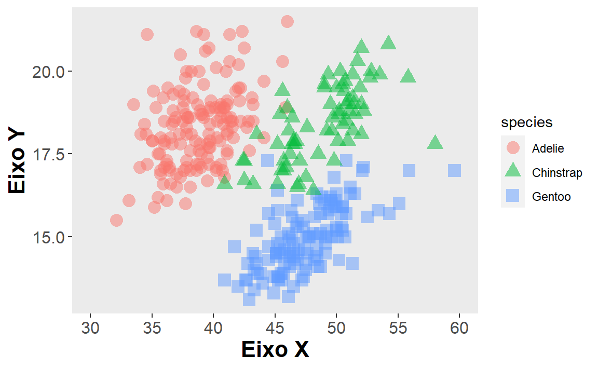
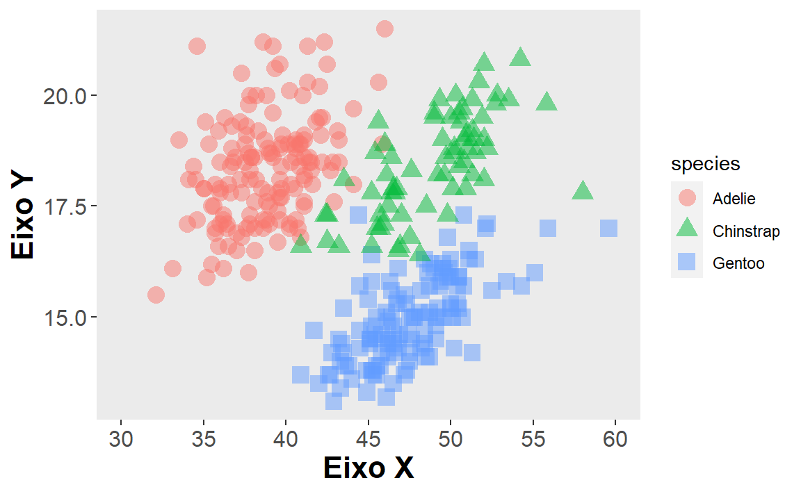

6.9.3 6.3. Temas personalizados ggtheme() Existem vários temas criados dentro do universo ggtheme() que podem facilitar
Existem vários temas criados dentro do universo
ggtheme() que
podem facilitar a escolha de um modelo com ótima qualidade para
publicação. Abaixo, demonstramos os modelos mais utilizados.
ggplot(data = penguins,
aes(x = bill_length_mm,
y = bill_depth_mm,
color = species,
shape = species)) +
geom_point(size = 3,
alpha = 0.8) +
geom_smooth(method = "lm", se = FALSE) +
scale_shape_manual(values = c(19, 15, 17))+
scale_color_manual(values = c("darkorange", "purple", "cyan4")) +
theme_gray(base_size = 16) +
labs(title = "theme_gray()", x = "Comprimento do bico (mm)", y = "Profundidade do bico (mm)",
color = "Espécies", shape = "Espécies")
ggplot(data = penguins,
aes(x = bill_length_mm,
y = bill_depth_mm,
color = species,
shape = species)) +
geom_point(size = 3,
alpha = 0.8) +
geom_smooth(method = "lm", se = FALSE) +
scale_shape_manual(values = c(19, 15, 17))+
scale_color_manual(values = c("darkorange", "purple", "cyan4")) +
theme_bw(base_size = 16) +
labs(title = "theme_bw()", x = "Comprimento do bico (mm)", y = "Profundidade do bico (mm)",
color = "Espécies", shape = "Espécies")
ggplot(data = penguins,
aes(x = bill_length_mm,
y = bill_depth_mm,
color = species,
shape = species)) +
geom_point(size = 3,
alpha = 0.8) +
geom_smooth(method = "lm", se = FALSE) +
scale_shape_manual(values = c(19, 15, 17))+
scale_color_manual(values = c("darkorange", "purple", "cyan4")) +
theme_classic(base_size = 16) +
labs(title = "theme_classic()", x = "Comprimento do bico (mm)", y = "Profundidade do bico (mm)",
color = "Espécies", shape = "Espécies") 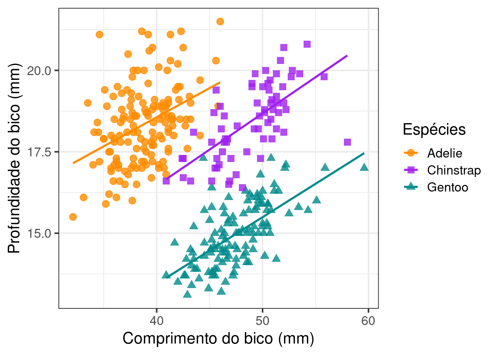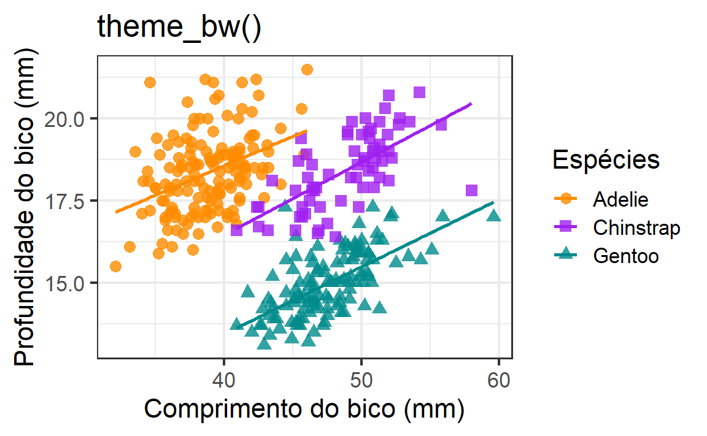
6.9.4 6.4. Criando seu próprio theme_custom()
Por fim, é possível criar um tema personalizado como uma função dentro do R. Assim, o usuário pode controlar todos os elementos gráficos em um único comando. O maior benefício de personalizar uma função é que não será necessários fazer os ajustes finos em todos os gráficos que tiver construindo, o que pode representar grande economia de tempo. Esse tipo de padronização é fundamental para que todos os gráficos de um artigo tenham consitência e harmonia estética.
theme_book <- function(){
# escolha uma fonte
font <- "Times" # digite names(pdfFonts()) no console do R para ver a lista
theme(
# Defina elementos do grid
panel.grid.major = element_line(colour = "#d3d3d3"),
panel.grid.minor = element_blank(),
axis.ticks = element_blank(),
panel.border = element_rect(colour = "black",
fill = NA,
size = .5),
# Defina elementos textuais
plot.title = element_text( # título
family = font, #set font family
size = 20, #set font size
face = 'bold', #bold typeface
hjust = 0, #left align
vjust = 2), #raise slightly
plot.subtitle = element_text( #subtitle
family = font, #font family
size = 14), #font size
plot.caption = element_text( #caption
family = font, #font family
size = 14, #font size
hjust = 1), #right align
axis.title = element_text( #axis titles
family = font, #font family
size = 14), #font size
axis.text = element_text( #axis text
family = font, #axis famuly
size = 14), #font size
axis.text.x = element_text( #margin for axis text
margin=margin(5, b = 10))
#since the legend often requires manual tweaking
#based on plot content, don't define it here
)
}
ggplot(data = penguins,
aes(x = bill_length_mm,
y = bill_depth_mm,
color = species,
shape = species)) +
geom_point(size = 3,
alpha = 0.8) +
geom_smooth(method = "lm", se = FALSE) +
scale_shape_manual(values = c(19, 15, 17))+
scale_color_manual(values = c("darkorange", "purple", "cyan4")) +
labs(title = "Tema personalizado", x = "Comprimento do bico (mm)", y = "Profundidade do bico (mm)",
color = "Espécies", shape = "Espécies") +
theme_book()
6.9.5 6.5. Exportando dados com alta qualidade com a função ggsave()
O último passo para construir gráficos com qualidade de publicação é exportar em um formato específico, como png, pdf ou svg (entre outros). A função ggsave() não só permite que você tenha o controle sobre o formato, mas também sobre a qualidade e tamanho desejados com os seguintes argumentos:
width = largura do gráfico
height = altura do gráfico
units = a unidade (cm, mm) que do gráfico para definir largura e tamanho
dpi = qualidade da imagem (padrão = 300)
g1 <- ggplot(data = penguins,
aes(x = bill_length_mm,
y = bill_depth_mm,
color = species,
shape = species)) +
geom_point(size = 3,
alpha = 0.8) +
geom_smooth(method = "lm", se = FALSE) +
scale_shape_manual(values = c(19, 15, 17))+
scale_color_manual(values = c("darkorange", "purple", "cyan4")) +
labs(x = "Comprimento do bico (mm)", y = "Profundidade do bico (mm)",
color = "Espécies", shape = "Espécies") +
theme(legend.position = c(0.1, 0.1),
legend.title = element_blank(),
legend.key = element_blank(),
legend.background = element_blank())+
theme_book()
g1
ggsave("g1.pdf", g1,
width = 15,
height = 15,
dpi =300,
units = "cm")
ggsave("g1.png", g1,
width = 15,
height = 15,
dpi =300,
units = "cm")
ggsave("g1.svg", g1,
width = 15,
height = 15,
dpi =300,
units = "cm")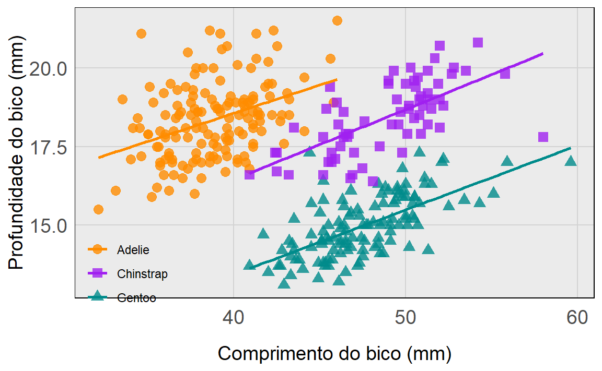
6.10 Check-list para garantir bons gráficos
Os eixos (Y e X) estão nomeados correatmente?
As unidades de ambos os eixos (Y e X) estão indicadas corretamente?
O tamanho da fonte dos eixos está adequado?
A escala e os intervalos dos eixos estão corretos?
O gráfico está proporcional (sem distorções: achatado em algum dos eixo)?
As cores utilizadas possuem uma lógica clara e agregam valor na compreensão e interpretação do gráfico?
Pare por um minuto e avalie se a mensagem principal do gráfico está clara.
6.11 Para se aprofundar
6.11.1 Livros
Chang W. 2018. R Graphics Cookbook. [http://www.cookbook-r.com/Graphs/]
Healy K. 2019. Data Visualization: a practical introduction. Princeton University Press. [https://socviz.co/´]
Kabacoff R. 2020. Data Visualization with R. [https://rkabacoff.github.io/datavis/]
Rahlf T. 2019. Data Visualisation with R: 111 Examples. 2ed. Springer. [http://www.datavisualisation-r.com/]
Sievert C. 2019. Interactive web-based data visualization with R, plotly, and shiny. Chapman & Hall/CRC. [https://plotly-r.com/]
Wickham H. 2016. ggplot2: elegant graphics for data analysis. Springer. [https://ggplot2-book.org/]
Wilke C O. 2019. Fundamentals of Data Visualization. O’Reilly Media. [https://clauswilke.com/dataviz/]
Wilkinson L, Wills D, Rope D, Norton A, Dubbs R. 2005. The Grammar of Graphics. Springer.